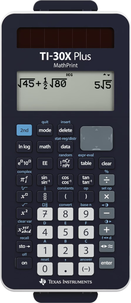
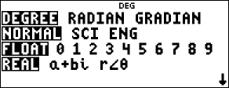
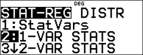
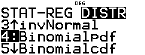

<!doctype html>
<html lang="de">
<head>
<meta charset="utf-8">
<meta name="viewport" content="width=device-width,initial-scale=1">
<meta name="robots" content="noindex, nofollow">
<meta name="referrer" content="no-referrer">
<title>TI30-Grundkurs</title>
<style>
  :root{
    color-scheme:light;
    --bg:#f4f5f8; --surface:#ffffff; --surface-2:#eef0f5; --border:#dde1ea;
    --text:#1b2030; --text-dim:#6b7285; --accent:#3159e0; --accent-ink:#ffffff;
    --good:#1a8a52; --good-bg:#e7f6ee; --bad:#c23a3a; --bad-bg:#fcebea;
    --shadow:0 1px 2px rgba(20,24,40,.06), 0 4px 14px rgba(20,24,40,.05);
    padding-top:env(safe-area-inset-top,0px); padding-bottom:env(safe-area-inset-bottom,0px);
  }
  @media (prefers-color-scheme: dark){
    :root:not([data-theme="light"]){
      --bg:#11131c; --surface:#181b27; --surface-2:#1f2330; --border:#2b2f40;
      --text:#e9ebf3; --text-dim:#9aa3ba; --accent:#7fa0ff; --accent-ink:#0d1020;
      --good:#5fd394; --good-bg:#153226; --bad:#ff8a80; --bad-bg:#3a1c1c;
      --shadow:0 1px 2px rgba(0,0,0,.3), 0 4px 18px rgba(0,0,0,.35);
    }
  }
  :root[data-theme="dark"]{
    --bg:#11131c; --surface:#181b27; --surface-2:#1f2330; --border:#2b2f40;
    --text:#e9ebf3; --text-dim:#9aa3ba; --accent:#7fa0ff; --accent-ink:#0d1020;
    --good:#5fd394; --good-bg:#153226; --bad:#ff8a80; --bad-bg:#3a1c1c;
    --shadow:0 1px 2px rgba(0,0,0,.3), 0 4px 18px rgba(0,0,0,.35);
  }
  *{box-sizing:border-box;}
  body{
    margin:0; background:var(--bg); color:var(--text);
    font-family:-apple-system,BlinkMacSystemFont,"Segoe UI",Roboto,Helvetica,Arial,sans-serif;
    font-size:16px; line-height:1.5;
  }
  img{max-width:100%;}
  [hidden]{display:none!important;}
  code,.mono{
    font-family:"SFMono-Regular",Consolas,"Liberation Mono",Menlo,monospace;
  }
  button{font-family:inherit;}

  #app{max-width:720px; margin:0 auto; padding:18px 16px 40px;}

  /* ---------- header with calculator logo ---------- */
  .apphead{display:flex; align-items:center; gap:14px; margin:4px 0 20px;}
  .apphead .logo{flex:0 0 auto;}
  .apphead .logo svg{display:block; width:40px; height:55px; filter:drop-shadow(0 3px 6px rgba(20,24,40,.18));}
  h1.appTitle{font-size:22px; font-weight:800; margin:0 0 2px;}
  p.appSub{color:var(--text-dim); font-size:13.5px; margin:0;}

  /* ---------- reference card (prominent) ---------- */
  .refcard{
    display:flex; align-items:center; gap:14px; width:100%; text-align:left; color:var(--text);
    background:var(--surface); border:1px solid var(--border); border-left:4px solid var(--accent);
    border-radius:14px; padding:14px 16px; cursor:pointer; box-shadow:var(--shadow); margin-bottom:24px;
  }
  .refcard:hover{border-color:var(--accent);}
  .refcard .ri{font-size:24px; flex:0 0 auto;}
  .refcard .rtxt{flex:1 1 auto; display:flex; flex-direction:column; gap:2px;}
  .refcard .rt{font-weight:700; font-size:15px;}
  .refcard .rs{font-size:12.5px; color:var(--text-dim);}
  .refcard .lvl-arrow{color:var(--accent);}
  .sectionlabel{
    font-size:12px; font-weight:700; text-transform:uppercase; letter-spacing:.06em;
    color:var(--text-dim); margin:0 0 9px 2px;
  }

  /* ---------- level grid ---------- */
  .levelgrid{display:flex; flex-direction:column; gap:10px; margin-bottom:18px;}
  .lvl-btn{
    display:flex; align-items:center; gap:14px; text-align:left;
    border:1px solid var(--border); border-radius:14px; background:var(--surface);
    padding:15px 16px; cursor:pointer; box-shadow:var(--shadow); width:100%; color:var(--text);
  }
  .lvl-btn:hover{border-color:var(--dot);}
  .lvl-dot{
    width:34px; height:34px; border-radius:10px; flex:0 0 auto;
    background:var(--dot); color:#fff; font-weight:800; font-size:14px;
    display:flex; align-items:center; justify-content:center;
  }
  .lvl-info{flex:1 1 auto; min-width:0; display:flex; flex-direction:column; gap:3px;}
  .lvl-name{font-weight:700; font-size:14.5px; line-height:1.3;}
  .lvl-status{font-size:12.5px; color:var(--text-dim);}
  .lvl-arrow{color:var(--text-dim); font-size:18px; flex:0 0 auto;}
  .lvl-btn.mixed{border-style:dashed;}


  /* ---------- level screen: tabs ---------- */
  .levelheader{font-weight:800; font-size:19px; margin-bottom:14px;}
  .tabbar{display:flex; gap:8px; margin-bottom:16px;}
  .tab-btn{
    flex:1 1 auto; text-align:center; padding:10px 14px; border-radius:10px;
    border:1px solid var(--border); background:var(--surface); color:var(--text-dim);
    font-weight:700; font-size:13.5px; cursor:pointer;
  }
  .tab-btn.active{background:var(--accent); color:var(--accent-ink); border-color:var(--accent);}

  .theorypane{
    background:var(--surface); border:1px solid var(--border); border-radius:16px;
    padding:20px; box-shadow:var(--shadow); font-size:14.5px;
  }
  .theorypane p{margin:.6em 0;}
  .theorypane ul,.theorypane ol{margin:.5em 0; padding-left:1.3em;}
  .theorypane li{margin:.25em 0;}
  figure.fig{margin:.8em 0;}
  figure.fig img{
    max-width:min(100%,440px); display:block; border-radius:8px; border:1px solid var(--border); background:#fff;
    box-shadow:var(--shadow);
  }
  figure.fig figcaption{font-size:11.5px; color:var(--text-dim); margin-top:6px;}

  /* recreated calculator display: input blue, result green (like on the Nspire) */
  .calc{
    background:#fff; color:#1b2030; border:1px solid var(--border); border-radius:10px;
    box-shadow:var(--shadow); padding:8px 14px; margin:.7em 0; max-width:100%; overflow-x:auto;
    font-family:"Cambria Math","Times New Roman",Georgia,serif; font-size:16.5px;
  }
  .calc .ln{display:flex; flex-wrap:wrap; align-items:center; column-gap:12px; row-gap:2px; padding:5px 0;}
  .calc .ln + .ln{border-top:1px dashed #e3e6ee;}
  .calc .in{color:#1f3fc4;}
  .calc .out{color:#16833f; display:inline-flex; align-items:center;}
  .calc .out::before{content:"\25B8"; font-size:.7em; margin-right:7px;}
  .calc .k{
    font-family:-apple-system,BlinkMacSystemFont,"Segoe UI",Roboto,sans-serif; font-size:11px; color:#6b7285;
    border:1px solid #d5d9e2; border-radius:4px; padding:0 4px; margin-left:6px; white-space:nowrap;
  }
  .frac{display:inline-flex; flex-direction:column; align-items:center; vertical-align:middle; font-size:.85em; line-height:1.1; margin:0 1px;}
  .frac > span:first-child{border-bottom:1px solid currentColor; padding:0 2px;}
  /* tall brackets drawn as SVG so they stretch over a two-line system, like on the calculator */
  .grp, .sys{display:inline-flex; align-items:center; vertical-align:middle;}
  .grp > .brk, .sys > .brk{align-self:stretch;}
  .brk{width:.42em; height:auto; min-height:1.4em; flex:0 0 auto; overflow:visible;}
  .brk.br{width:.5em;}
  .ph{display:inline-block; width:.95em; height:1.2em; border:1.3px dashed currentColor; border-radius:2px; margin:2px 0; vertical-align:middle;}
  ol.steps{padding-left:1.4em;}
  ol.steps > li > figure.fig{margin:.6em 0 .2em;}
  ol.steps > li > p{margin:.5em 0;}
  img.inlinekey{display:inline-block; height:1.4em; width:auto; vertical-align:middle; border:1px solid var(--border); border-radius:5px; margin:0 2px;}
  .figpair{display:flex; flex-wrap:wrap; gap:14px; margin:.6em 0;}
  .figpair figure.fig{margin:0; flex:1 1 220px; max-width:330px;}
  .shot{position:relative; display:inline-block; max-width:100%;}
  .shot img{max-width:100% !important;}
  .ring{position:absolute; border:3px solid #f0a020; border-radius:9px; box-shadow:0 0 0 2px rgba(255,255,255,.7); pointer-events:none;}
  .tip > .calc:last-child{margin-bottom:2px;}
  ol.steps > li{margin:.3em 0 .9em;}
  ol.steps > li > .calc{margin:.5em 0 0;}
  .sysrows{display:flex; flex-direction:column; justify-content:center; line-height:1.35; font-size:.92em; padding:2px 3px 2px 1px;}
  .vec{
    display:inline-flex; flex-direction:column; align-items:center; vertical-align:middle;
    border-left:1.5px solid currentColor; border-right:1.5px solid currentColor; border-radius:3px;
    padding:1px 6px; line-height:1.25; font-size:.9em; margin:0 2px;
  }
  /* recreated key palettes */
  .pal{
    display:inline-grid; border:1px solid #cfd3dc; border-radius:8px; overflow:hidden;
    background:#fff; box-shadow:var(--shadow);
  }
  .pal span{
    min-width:42px; height:38px; padding:0 8px; display:flex; align-items:center; justify-content:center;
    font-size:18px; color:#1b2030; border-right:1px solid #e3e6ee; border-bottom:1px solid #e3e6ee;
    font-family:"Cambria Math","Times New Roman",Georgia,serif;
  }
  .pal.small span{font-size:14px; height:32px;}
  .pal span.on{background:#2a78d4; color:#fff;}
  .theorypane h4{font-size:15.5px; margin:1.5em 0 .3em;}
  .theorypane h4:first-child{margin-top:0;}
  /* collapsible sections in the Erklärungen tab */
  .secttools{display:flex; justify-content:space-between; margin:-6px 0 6px;}
  .secttools button{background:none; border:none; color:var(--accent); font-weight:600; font-size:13px; cursor:pointer; padding:4px 0;}
  details.sect + details.sect{border-top:1px solid var(--border);}
  details.sect > summary{
    list-style:none; cursor:pointer; display:flex; align-items:center; justify-content:space-between; gap:12px;
    padding:13px 2px; font-weight:700; font-size:15.5px;
  }
  details.sect > summary::-webkit-details-marker{display:none;}
  details.sect > summary::after{
    content:"›"; color:var(--text-dim); font-size:20px; line-height:1; transform:rotate(90deg); transition:transform .15s; flex:0 0 auto;
  }
  details.sect[open] > summary::after{transform:rotate(-90deg);}
  details.sect > summary:hover{color:var(--accent);}
  details.sect > .sbody{padding:0 2px 16px;}
  details.sect > .sbody > :first-child{margin-top:0;}
  .theorypane .tip{background:var(--surface-2); border-radius:8px; padding:8px 12px; font-size:14px;}
  table.legend{border-collapse:collapse; font-size:13.5px; margin:.6em 0;}
  table.legend td{padding:3px 12px 3px 0; vertical-align:top;}
  table.legend td:first-child{font-weight:700; white-space:nowrap; font-family:"Cambria Math","Times New Roman",Georgia,serif;}
  table.legend.keys td:first-child{font-family:"SFMono-Regular",Consolas,"Liberation Mono",Menlo,monospace; font-weight:600; font-size:12.5px; width:11.5em;}

  /* keycaps for keys and menu paths */
  .keyseq{display:inline-flex; align-items:center; flex-wrap:nowrap; gap:3px; vertical-align:middle; margin:1px 0;}
  .kwrap{white-space:nowrap;}
  kbd.key{
    display:inline-flex; align-items:center; justify-content:center; min-width:1.75em; height:1.6em; padding:0 .45em;
    font-family:-apple-system,BlinkMacSystemFont,"Segoe UI",Roboto,sans-serif; font-size:.8em; font-weight:700; line-height:1;
    color:var(--text); background:var(--surface); border:1px solid var(--border); border-bottom-width:2.5px; border-radius:6px;
    white-space:nowrap;
  }
  kbd.key.word{color:var(--accent);}
  .keyseq .ksep{color:var(--text-dim); font-size:.85em; margin:0 1px;}
  .keyseq .kplain{color:var(--text-dim); font-size:.9em; margin:0 2px;}
  .exlist{display:flex; flex-direction:column; gap:14px;}
  .mixbar{display:flex; align-items:center; justify-content:space-between; gap:10px; flex-wrap:wrap; margin-bottom:14px; font-size:13.5px; color:var(--text-dim);}
  .qcard{
    background:var(--surface); border:1px solid var(--border); border-radius:16px;
    padding:20px; box-shadow:var(--shadow); transition:background .25s, border-color .25s;
  }
  .qcard.flash-bad{background:var(--bad-bg);}
  .qcard.solved{background:var(--good-bg); border-color:var(--good);}
  .qbadge{
    font-size:11px; font-weight:700; color:var(--text-dim); text-transform:uppercase;
    letter-spacing:.04em; margin-bottom:8px;
  }
  .qbadge .check{color:var(--good); margin-left:6px; text-transform:none; letter-spacing:0;}
  .qtext{font-size:16.5px; margin:0 0 12px;}
  .qrow{display:flex; gap:8px; flex-wrap:wrap; align-items:center;}
  .qrow input[type=text]{
    flex:1 1 220px; min-width:160px; font-family:"SFMono-Regular",Consolas,"Liberation Mono",Menlo,monospace;
    font-size:15px; padding:10px 12px; border-radius:10px; border:1px solid var(--border);
    background:var(--bg); color:var(--text);
  }
  .qrow input[type=text]:focus{outline:2px solid var(--accent); outline-offset:1px;}
  .qrow input[type=text]:disabled{opacity:.7;}
  button.cta{
    font-weight:700; font-size:14px; background:var(--accent); color:var(--accent-ink);
    border:none; border-radius:10px; padding:10px 18px; cursor:pointer; flex:0 0 auto;
  }
  button.cta:disabled{opacity:.5; cursor:default;}
  button.cta.secondary{background:var(--surface-2); color:var(--text); border:1px solid var(--border);}
  button.linklike{
    background:none; border:none; color:var(--text-dim); text-decoration:underline; font-size:12.5px;
    cursor:pointer; padding:0;
  }
  .hintbox{
    margin-top:10px; font-size:13.5px; background:var(--surface-2); border-radius:8px; padding:8px 11px;
  }
  .feedback{margin-top:14px; display:none; font-size:14.5px;}
  .feedback.show{display:block;}
  .feedback .tag-good{color:var(--good); font-weight:700;}
  .feedback .tag-bad{color:var(--bad); font-weight:700;}
  .feedback .explain{display:block; margin-top:4px; color:var(--text-dim); font-size:13.5px;}
  .feedback-actions{margin-top:12px; display:flex; gap:8px;}


  /* ---------- search ---------- */
  .searchbox{position:relative; margin-bottom:16px;}
  .searchbox input{
    width:100%; font-size:16px; padding:13px 40px 13px 42px; border-radius:12px;
    border:1px solid var(--border); background:var(--surface); color:var(--text); box-shadow:var(--shadow);
    font-family:inherit; -webkit-appearance:none; appearance:none;
  }
  .searchbox input:focus{outline:2px solid var(--accent); outline-offset:1px;}
  .searchbox .sicon{position:absolute; left:14px; top:50%; transform:translateY(-50%); color:var(--text-dim); pointer-events:none;}
  .searchbox .sclear{
    position:absolute; right:8px; top:50%; transform:translateY(-50%); border:none; background:none;
    color:var(--text-dim); font-size:20px; line-height:1; padding:6px 8px; cursor:pointer;
  }
  .results{display:flex; flex-direction:column; gap:8px;}
  .res{
    display:block; width:100%; text-align:left; color:var(--text); cursor:pointer;
    background:var(--surface); border:1px solid var(--border); border-left:4px solid var(--dot);
    border-radius:12px; padding:11px 14px; box-shadow:var(--shadow);
  }
  .res:hover{border-color:var(--dot);}
  .res .rmeta{font-size:11.5px; color:var(--text-dim); font-weight:600; margin-bottom:2px;}
  .res .rtitle{font-weight:700; font-size:14.5px;}
  .res .rsnip{font-size:13px; color:var(--text-dim); margin-top:3px; line-height:1.45;}
  .res mark, .rtitle mark{background:rgba(255,200,0,.35); color:inherit; border-radius:3px; padding:0 1px;}
  .noresults{color:var(--text-dim); font-size:14px; padding:10px 2px;}
  @keyframes flashbg{0%{background:rgba(255,200,0,.45);} 100%{background:transparent;}}
  .flash-target{animation:flashbg 2.2s ease-out; border-radius:6px;}

  .tools-l, .tools-r{display:inline-flex; align-items:center; gap:14px;}
  a.pdflink{color:var(--accent); font-weight:600; font-size:13px; text-decoration:none;}
  a.pdflink:hover{text-decoration:underline;}
  button.seelink{background:none; border:0; padding:0; font:inherit; font-size:12.5px; font-weight:600; color:var(--accent); cursor:pointer; white-space:nowrap;}
  @media print{ button.seelink{font-size:9.5px; color:#1b2030;} }
  button.seelink:hover{text-decoration:underline;}
  a.reflink.pdflink{font-size:13.5px; font-weight:700; padding:9px 14px; border:1px solid var(--border); border-radius:10px; text-decoration:none;}
  .printhead{display:none;}
  .backtaskbar{position:fixed; right:16px; bottom:calc(16px + env(safe-area-inset-bottom, 0px)); z-index:30;}
  .backtaskbar .cta{box-shadow:var(--shadow);}
  /* ---------- back to exercise, exercise cards ---------- */
  .exintro{font-size:13.5px; color:var(--text-dim); margin:0 0 12px;}
  .qhead{display:flex; justify-content:space-between; align-items:flex-start; gap:10px;}
  .qnew{background:none; border:1px solid var(--border); border-radius:8px; color:var(--accent); font-size:12px; font-weight:600; padding:3px 9px; cursor:pointer; white-space:nowrap; margin-top:-3px;}
  .qnew:hover{border-color:var(--accent);}
  .qlinks{display:flex; gap:16px; margin-top:10px; flex-wrap:wrap;}
  .feedback .tag-sol{color:var(--accent); font-weight:700;}
  .feedback .explain.sol{color:var(--text);}
  button.cta.small{font-size:13px; padding:7px 12px;}
  /* ---------- start screen extras ---------- */
  .lvl-desc{font-size:12.5px; color:var(--text-dim); line-height:1.35;}
  .lvl-status{font-size:11.5px;}
  /* ---------- Spick ---------- */
  .spickhead{display:flex; align-items:center; gap:12px; margin-bottom:14px;}
  .spickhead .logo svg{width:30px; height:41px; display:block;}
  .spickhead .levelheader{margin:0;}
  .spick{display:grid; grid-template-columns:repeat(auto-fit, minmax(min(300px,100%), 1fr)); gap:12px;}
  .spsec{margin-top:22px;}
  .palrow{display:flex; flex-wrap:wrap; gap:16px; align-items:flex-start;}
  .palrow figure.fig{margin:0;}
  .spbox{position:relative; overflow:hidden; background:var(--surface); border:1px solid var(--border); border-radius:12px; padding:10px 12px 10px 16px; box-shadow:var(--shadow);}
  .spbox::before{content:""; position:absolute; left:0; top:0; bottom:0; width:4px; background:var(--dot);}
  .spbox h3{font-size:13.5px; margin:0 0 6px; display:flex; align-items:center; gap:8px;}
  .lvl-dot.sm{width:20px; height:20px; font-size:11px; border-radius:6px; background:var(--dot);}
  .spbox table{border-collapse:collapse; width:100%; font-size:12.5px;}
  .spbox td{padding:3px 0; vertical-align:middle;}
  .spbox td:last-child{text-align:right; padding-left:8px; white-space:nowrap;}
  .spbox .keyseq{flex-wrap:nowrap;}
  .spbox tr + tr td{border-top:1px dashed var(--border);}
  /* ---------- print ---------- */
  @media print{
    :root, :root:not([data-theme="light"]), :root[data-theme="dark"]{
      --bg:#fff; --surface:#fff; --surface-2:#f1f2f6; --border:#c9ced8; --text:#111; --text-dim:#555;
      --accent:#2a4fd0; --good:#1a7a48; --bad:#b03030; --shadow:none;
    }
    body{background:#fff;}
    #app{max-width:none; padding:0;}
    .backbar, .tabbar, .secttools, .backtaskbar, .searchbox, .mixbar, .qrow, .qlinks, .qnew,
    .hintbox, .feedback, .exintro{display:none !important;}
    .theorypane{border:none; box-shadow:none; padding:0;}
    details.sect > summary::after{display:none;}
    figure, .calc, .pal, .qcard, .spbox, tr{break-inside:avoid;}
    .qcard{box-shadow:none;}
    .spick{grid-template-columns:minmax(0,1fr) minmax(0,1fr); gap:8px;}
    .refpal{display:none !important;}
    .printhead{display:block; font-size:10px; color:#555; margin-bottom:4px;}
    figure.fig img{max-width:min(100%,250px) !important;}
    .figpair figure.fig{max-width:250px;}
    figure.fig{margin:.4em 0;}
    .theorypane{font-size:13px;}
    .calc{font-size:14.5px; padding:5px 12px; margin:.4em 0;}
    details.sect > summary{padding:8px 0; font-size:14px; color:var(--text) !important; break-after:avoid; page-break-after:avoid;}
    details.sect > .sbody{padding-bottom:8px;}
    .theorypane p{margin:.4em 0;}
    .flash-target{animation:none !important; background:none !important;}
    .sectionlabel{margin:10px 0 6px;}
    .spsec{margin-top:12px;}
    .spbox{padding:6px 8px 6px 11px; border-color:#c5cad6; box-shadow:none;}
    .spbox table{font-size:9.5px;}
    .spbox td{padding:1px 0;}
    .spbox h3{font-size:11px; margin:0 0 3px;}
    .spickhead{margin-bottom:6px;}
    .spickhead .levelheader{font-size:16px;}
    kbd.key{font-size:.75em; height:1.45em;}
    kbd.key{border-color:#999;}
    .lvl-dot, .pal span.on, .spbox, .theorypane .tip{-webkit-print-color-adjust:exact; print-color-adjust:exact;}
  }
  .backbar{margin-bottom:14px; display:flex; justify-content:space-between; align-items:center; gap:10px;}
  .backbar .reflink{
    background:none; border:1px solid var(--border); border-radius:10px; color:var(--accent);
    font-weight:700; font-size:13.5px; padding:9px 14px; cursor:pointer;
  }
  .backbar .reflink:hover{border-color:var(--accent);}

  /* ---- TI-30 keycaps: 2nd function in blue above the key ---- */
  .tk{display:inline-flex; flex-direction:column; align-items:center; vertical-align:middle; line-height:1; margin:0 1px;}
  .tk .t2{font-size:8.5px; font-weight:700; color:#2b86cf; height:10px; margin-bottom:1px; white-space:nowrap; font-family:-apple-system,BlinkMacSystemFont,"Segoe UI",Roboto,sans-serif;}
  .tk .t2 sup{font-size:.8em;}
  .tkr{display:inline-flex; align-items:center; gap:2px;}
  .tk kbd{
    display:inline-flex; align-items:center; justify-content:center; min-width:2.15em; height:1.55em; padding:0 .42em;
    font-family:-apple-system,BlinkMacSystemFont,"Segoe UI",Roboto,sans-serif; font-size:.76em; font-weight:600; line-height:1;
    color:#fff; background:#2b2f36; border-radius:5px; border-bottom:2px solid #0e1013; white-space:nowrap;
  }
  .tk kbd sup{font-size:.7em; margin-top:-.5em;}
  .tk kbd .tsm{font-size:.62em; line-height:1; margin-left:2px; max-width:2.6em; white-space:normal; text-align:left;}
  .tk.num kbd{background:#eceef1; color:#16191e; border-bottom-color:#a9aeb7; box-shadow:inset 0 0 0 1px #c9cdd4;}
  .tk.op kbd{background:#8e98a4; color:#fff; border-bottom-color:#5d6570;}
  .tk.k2nd kbd{background:#5aa2db; color:#fff; border-bottom-color:#2f6f9f;}
  .tk.arrow kbd{background:#d9dde3; color:#2b2f36; border-bottom-color:#a9aeb7; border-radius:50%; min-width:1.55em; padding:0;}
  .tk .rep{font-size:9px; font-weight:800; color:#fff; background:#8a3fb0; border-radius:8px; padding:2px 4px; line-height:1;}
  .keyseq .ksep{align-self:flex-end; margin-bottom:.25em;}
  .mlab{display:inline-block; font-family:"SFMono-Regular",Consolas,"Liberation Mono",Menlo,monospace; font-size:.74em; font-weight:700; color:#fff; background:#16191e; padding:2px 5px; border-radius:2px; align-self:flex-end; white-space:nowrap;}
  @media (prefers-color-scheme: dark){
    :root:not([data-theme="light"]) .tk kbd{box-shadow:0 0 0 1px rgba(255,255,255,.22);}
    :root:not([data-theme="light"]) .tk .t2{color:#7cc0f4;}
    :root:not([data-theme="light"]) .mlab{background:#eef0f4; color:#111;}
  }
  :root[data-theme="dark"] .tk kbd{box-shadow:0 0 0 1px rgba(255,255,255,.22);}
  :root[data-theme="dark"] .tk .t2{color:#7cc0f4;}
  table.legend.keys td:first-child{font-family:inherit; width:auto; white-space:nowrap; padding-right:14px;}

  /* ---- screenshots and recreated displays ---- */
  figure.fig img.scr{width:min(100%,292px); border-radius:6px;}
  figure.fig img.photo{width:min(60%,170px); border:0; box-shadow:none; background:none;}
  .figpair figure.fig{margin:0;}
  .lcd{
    width:min(100%,292px); background:#fff; color:#111; border:1px solid var(--border); border-radius:6px; box-shadow:var(--shadow);
    padding:2px 10px 8px; font-family:"SFMono-Regular",Consolas,"Liberation Mono",Menlo,monospace; font-size:17px;
  }
  .lcd .ind{text-align:center; font-size:9px; font-weight:700; letter-spacing:.5px; margin-bottom:2px;}
  .lcd .row{display:flex; justify-content:space-between; align-items:center; gap:10px; min-height:1.5em;}
  .lcd .r{margin-left:auto; text-align:right;}
  .lcd sup{font-size:.62em;}
  .fml{font-family:"Cambria Math","Times New Roman",Georgia,serif; font-size:17px; margin:.6em 0; line-height:2.4;}
  .fml sup{font-size:.68em; vertical-align:.9em; line-height:0;}
  .stack{display:inline-flex; flex-direction:column; align-items:center; line-height:1.15; font-size:.9em; padding:0 1px;}
  .sig{display:inline-flex; flex-direction:column; align-items:center; vertical-align:middle; line-height:1; margin:0 3px; font-size:.7em;}
  .sig .ss{font-size:1.9em; line-height:.95;}

  /* ---- "nur GESO" badge ---- */
  .lvl-badge{display:inline-block; font-size:10.5px; font-weight:700; color:var(--dot); border:1px solid var(--dot); border-radius:20px; padding:1px 7px; margin-left:6px; vertical-align:2px; white-space:nowrap;}
  @media print{
    .tk kbd, .tk .rep, .mlab{-webkit-print-color-adjust:exact; print-color-adjust:exact;}
    .tk .t2{height:9px; font-size:7.5px;}
  }
</style>

<div id="app"></div>

</head>
<body>
<script>
(function(){
  "use strict";

  /* ================= small builders: formulas and recreated TI-30 displays ================= */
  function fr(n, d){ return '<span class="frac"><span>'+n+'</span><span>'+d+'</span></span>'; }
  function brk(kind){
    var d = {"(":"M8 1 C1.5 12 1.5 28 8 39", ")":"M2 1 C8.5 12 8.5 28 2 39"}[kind];
    return '<svg class="brk" viewBox="0 0 10 40" preserveAspectRatio="none" aria-hidden="true">'+
           '<path d="'+d+'" fill="none" stroke="currentColor" stroke-width="1.3" vector-effect="non-scaling-stroke"/></svg>';
  }
  function binom(n, k){ return '<span class="grp">'+brk("(")+'<span class="stack"><span>'+n+'</span><span>'+k+'</span></span>'+brk(")")+'</span>'; }
  function sigma(lo, hi){ return '<span class="sig"><span>'+hi+'</span><span class="ss">Σ</span><span>'+lo+'</span></span>'; }
  function fml(html){ return '<div class="fml">'+html+'</div>'; }
  /* recreated display: rows are [left, right]; right = result, right-aligned */
  function lcd(rows, caption){
    return '<figure class="fig"><div class="lcd"><div class="ind">DEG</div>'+rows.map(function(r){
      return '<div class="row"><span>'+(r[0] || '')+'</span><span class="r">'+(r[1] == null ? '' : r[1])+'</span></div>';
    }).join('')+'</div>'+(caption ? '<figcaption>'+caption+'</figcaption>' : '')+'</figure>';
  }
  function scr(name, alt, caption){
    return '<figure class="fig">'+(caption ? '<figcaption>'+caption+'</figcaption>' : '')+'</figure>';
  }
  function scrPair(a, b){ return '<div class="figpair">'+a+b+'</div>'; }
  var B = function(s){ return '<b>'+s+'</b>'; };

  /* ================= THEORY TEXT PER LEVEL ================= */
  var THEORY = {
    1:'<h4>Einschalten und Eingabezeile</h4>'+
      '<p>Mit [[on]] schaltest du den Rechner ein. Die <strong>unterste Zeile ist die Eingabezeile</strong> - nur sie kann bearbeitet werden. Darüber stehen die früheren Eingaben und Resultate (Verlauf).</p>'+
      scr("s_verlauf", "Verlauf und Eingabezeile", "Oben die Rechnung 1+2 mit Resultat 3, unten die Eingabezeile")+
      '<p>Mit [[▲]] wählst du eine frühere Eingabe oder ein Resultat aus und kopierst es mit [[enter]] in die Eingabezeile.</p>'+
      '<figure class="fig"><figcaption>TI-30X Plus MathPrint</figcaption></figure>'+
      '<h4>Wichtige Tasten</h4>'+
      '<table class="legend keys">'+
        '<tr><td>[[enter]]</td><td>Eingabezeile berechnen</td></tr>'+
        '<tr><td>[[delete]]</td><td>aktuelles Zeichen löschen</td></tr>'+
        '<tr><td>[[clear]]</td><td>ganze Eingabezeile löschen (Cursor rechts der Eingabe) bzw. alles ab dem Cursor (Cursor auf einem Zeichen)</td></tr>'+
        '<tr><td>[[2nd delete]]</td><td>Zeichen einfügen statt überschreiben (insert)</td></tr>'+
        '<tr><td>[[fd]]</td><td>zwischen Bruch- und Dezimaldarstellung wechseln</td></tr>'+
        '<tr><td>[[sto var]]</td><td>Wert in einer Variablen speichern</td></tr>'+
        '<tr><td>[[var enter]]</td><td>Wert einer Variablen abrufen</td></tr>'+
        '<tr><td>[[2nd mode]]</td><td>einen Modus verlassen, z. B. Wertetabelle oder Statistik (quit)</td></tr>'+
      '</table>'+
      '<p class="tip"><strong>2nd-Funktionen:</strong> Über vielen Tasten steht eine zweite, blau beschriftete Funktion. Du erreichst sie, indem du zuerst [[2nd]] und dann die Taste drückst. Beispiel: [[2nd x2]] ergibt die Wurzel √.</p>'+
      '<h4>Einstellungen (mode)</h4>'+
      '<p>Mit [[mode]] passt du die Einstellungen an. Mit den Pfeiltasten wählst du eine Option, mit [[enter]] bestätigst du sie, mit [[2nd mode]] verlässt du das Menü.</p>'+
      scr("s_mode", "Einstellungen mode", "Einstellungen nach Drücken von mode")+
      '<p>Wichtig sind die <strong>zweite und dritte Zeile</strong>.</p>'+
      '<p><strong>Zweite Zeile: Darstellung von Zahlen.</strong> Standard ist <strong>NORMAL</strong>. Mit <strong>SCI</strong> werden die Resultate in wissenschaftlicher Darstellung angezeigt.</p>'+
      scrPair(scr("s_normal", "NORMAL", "NORMAL: 5/1000 = 0.005"), scr("s_sci", "SCI", "SCI: 5/1000 = 5E-3, also 5·10⁻³"))+
      '<p><strong>Dritte Zeile: Anzahl Dezimalstellen.</strong> Standard ist <strong>FLOAT</strong>: Der Rechner zeigt bis zu 10 Ziffern an.</p>'+
      '<h4>Kontrast des Displays</h4>'+
      '<p>Mit [[2nd plus]] (◐►) wird der Kontrast stärker, mit [[2nd minus]] (◄◐) schwächer.</p>'+
      '<h4>Reset</h4>'+
      '<p>Mit [[2nd 0]] (reset) erscheint eine Abfrage. Mit [[2]] (Yes) setzt du den Rechner zurück, mit [[1]] (No) brichst du ab. Alternativ drückst du [[clear]] und [[on]] gleichzeitig.</p>'+
      scr("n_reset", "Reset-Abfrage", "Abfrage nach 2nd 0")+
      '<p class="tip"><strong>Achtung:</strong> Ein Reset löscht gespeicherte Werte und setzt alle Einstellungen zurück.</p>',

    2:'<h4>Brüche</h4>'+
      '<p>[[frac]] fügt eine Bruchvorlage ein. Mit den Pfeiltasten wechselst du zwischen Zähler und Nenner und kommst mit [[►]] wieder aus dem Bruch heraus. Der Rechner gibt das Resultat wenn möglich als Bruch aus. Mit [[fd]] wechselst du zwischen Bruch- und Dezimaldarstellung.</p>'+
      scr("n_bruch", "Bruch und Dezimalzahl", "3/4 + 5/6 = 19/12, nach ◄►≈ als Dezimalzahl 1.583333333")+
      '<h4>Wurzeln und Potenzen</h4>'+
      '<table class="legend keys">'+
        '<tr><td>[[x2]]</td><td>Quadrat</td></tr>'+
        '<tr><td>[[pow]]</td><td>beliebige Potenz: Exponent eintippen, mit [[►]] wieder heraus</td></tr>'+
        '<tr><td>[[2nd x2]]</td><td>Quadratwurzel √</td></tr>'+
        '<tr><td>[[2nd pow]]</td><td>höhere Wurzel: zuerst den Wurzelexponenten, dann mit [[►]] zum Radikanden</td></tr>'+
      '</table>'+
      scr("n_wurzel", "Wurzel und Potenz", "³√125 = 5 und 2¹⁰ = 1024")+
      '<h4>Logarithmus</h4>'+
      '<p>Die Taste [[lnlog]] hat drei Funktionen, je nachdem wie oft du sie drückst:</p>'+
      '<ul><li>einmal: natürlicher Logarithmus <code>ln</code></li><li>zweimal: Zehnerlogarithmus <code>log</code></li><li>dreimal: Logarithmus mit beliebiger Basis <code>log<sub>□</sub></code></li></ul>'+
      scr("n_log", "Logarithmus", "log₂(1024) = 10 und ln(1) = 0")+
      '<h4>Die beiden Minus-Tasten</h4>'+
      '<p>[[neg]] ist das <strong>Vorzeichen</strong> (negative Zahl). Steht es zwischen zwei Zahlen, rechnet der Rechner mal (−1).</p>'+
      scr("s_neg", "Vorzeichen-Taste", "−5·−3 = 15 und 6 −4 = 6·(−4) = −24")+
      '<p>[[minus]] ist das <strong>Rechenzeichen</strong> der Subtraktion. Tippst du es zu Beginn der Eingabezeile, wird vom letzten Resultat subtrahiert. <code>ans</code> (answer) steht für das letzte Resultat.</p>'+
      scr("s_ans", "Minus-Taste mit ans", "20−8 = 12, danach − 3: ans−3 = 9")+
      '<p class="tip"><strong>Achtung:</strong> Der Rechner quadriert vor dem Vorzeichen: [[neg 4 x2]] ergibt −16. Für (−4)² brauchst du Klammern.</p>'+
      '<h4>Werte speichern und abrufen</h4>'+
      '<p><strong>Speichern:</strong> Wert eintippen, dann [[sto]] und die Variable mit [[var]] wählen, zum Schluss [[enter]]. Mehrmaliges Drücken von [[var]] wechselt zwischen x, y, z, t, a, b, c, d.</p>'+
      '<p><strong>Abrufen:</strong> [[var]] fügt die Variable ein, [[enter]] zeigt ihren Wert. Du kannst die Variable auch direkt in einer Rechnung verwenden.</p>'+
      scr("n_sto", "Wert speichern", "5 als x speichern und danach mit x rechnen")+
      '<p>[[2nd var]] (clear var) löscht alle gespeicherten Variablen.</p>',

    3:'<p>Der TI-30 kann Funktionsterme speichern und eine <strong>Wertetabelle</strong> erstellen. Das hilft zum Beispiel beim Skizzieren von Graphen.</p>'+
      '<h4>Wertetabelle erstellen</h4>'+
      '<ol class="steps">'+
        '<li>[[table]] drücken.</li>'+
        '<li>Option <strong>1: Add/Edit Func</strong> wählen.'+scr("t_menu", "FUNCTION TABLE", "Menü der Taste table")+'</li>'+
        '<li>Den Funktionsterm für f eintippen und mit [[enter]] bestätigen. Das x erhältst du mit [[var]].<br>Beispiel: f(x) = x²'+scr("t_f", "f(x)=x^2", "f(x) = x²")+'</li>'+
        '<li>Bei Bedarf einen zweiten Funktionsterm g eintippen. Sonst die Zeile leer lassen. Beide Male mit [[enter]] bestätigen.<br>Beispiel: g(x) = 3x²'+scr("t_g", "g(x)=3x^2", "g(x) = 3x²")+'</li>'+
        '<li>Die Einstellungen der Wertetabelle vornehmen und mit [[\'CALC]] bestätigen.<br>Beispiel: Start bei −2, Schrittweite 0.5'+scr("t_setup", "TABLE SETUP", "Start = −2, Step = 0.5")+'</li>'+
        '<li>In der Wertetabelle liest du die x-Werte und die Funktionswerte ab. Mit den Pfeiltasten bewegst du dich in der Tabelle.'+scr("t_table", "Wertetabelle", "Spalten x, f(x) und g(x)")+'</li>'+
      '</ol>'+
      '<p class="tip"><strong>Achtung:</strong> Für einen negativen Startwert verwendest du die Vorzeichen-Taste [[neg]], nicht die Minus-Taste.</p>'+
      '<h4>Tabelle verlassen und Funktion ändern</h4>'+
      '<p>Mit [[2nd mode]] (quit) verlässt du die Wertetabelle. Um einen Funktionsterm zu ändern, drückst du wieder [[table 1]].</p>',

    4:'<p>Mit dem TI-30 berechnest du die meisten Kennzahlen aus dem Unterricht. Zuerst erfasst du die Daten.</p>'+
      '<h4>1. Daten erfassen</h4>'+
      '<ol class="steps">'+
        '<li>[[data]] drücken.</li>'+
        '<li>Die Daten eintragen: in der ersten Spalte <strong>L1</strong> die Werte, in der zweiten Spalte <strong>L2</strong> die Häufigkeiten. Kommt jeder Wert nur einmal vor, bleibt L2 leer.<br>Beispiel: Der Wert 3 kommt 10-mal vor, der Wert 4 12-mal, der Wert 5 8-mal.'+scr("d_editor", "Dateneditor", "L1: Werte, L2: Häufigkeiten")+'</li>'+
      '</ol>'+
      '<ul><li>[[2nd delete]] (insert) fügt eine zusätzliche Zeile ein.</li>'+
        '<li>[[delete]] löscht einen Eintrag. [[clear]] bewirkt hier nichts.</li>'+
        '<li><strong>Spalte sortieren:</strong> Im Dateneditor nochmals [[data]] drücken, mit [[►]] zweimal zu OPS wechseln und Option 1 wählen (Sort Sm-Lg, aufsteigend). Danach legst du fest, in welche Spalte die sortierten Werte kommen, zum Beispiel L3. Du kannst auch die bisherige Spalte überschreiben.'+
          scrPair(scr("d_ops", "OPS-Menü", "data, dann OPS, Option 1"), scr("d_sort", "Sortieren", "sortierte Werte nach L3"))+'</li>'+
        '<li><strong>Spalten löschen:</strong> Im Dateneditor nochmals [[data]] drücken und unter [[\'CLR]] eine der Optionen 1 bis 3 wählen, um eine Spalte zu leeren. Option 4 (Clear ALL) leert alle Listen.'+
          scr("n_clr", "CLR-Menü", "data im Dateneditor: CLR, Clear L1, L2, L3 …")+'</li></ul>'+
      '<h4>2. Kennzahlen berechnen</h4>'+
      '<ol class="steps">'+
        '<li>[[2nd data]] (stat-reg/distr) drücken.</li>'+
        '<li>Option <strong>2: 1-VAR STATS</strong> wählen.'+scr("st_menu", "STAT-REG-Menü", "Option 2: 1-VAR STATS")+'</li>'+
        '<li>Die Spalten richtig wählen: bei DATA die Werte (L1), bei FREQ die Häufigkeiten (L2). Wurde jeder Wert einzeln erfasst, wählst du bei FREQ <strong>ONE</strong>. Mit [[\'CALC]] berechnen.'+scr("st_setup", "DATA und FREQ", "DATA: L1, FREQ: L2")+'</li>'+
        '<li>Der Rechner zeigt die Kennzahlen. Mit [[▼]] blätterst du weiter.'+
          '<div class="figpair">'+scr("st_r1", "Kennzahlen 1", "")+scr("st_r2", "Kennzahlen 2", "")+scr("st_r3", "Kennzahlen 3", "")+scr("st_r4", "Kennzahlen 4", "")+'</div></li>'+
      '</ol>'+
      '<table class="legend">'+
        '<tr><td>n</td><td>Anzahl Werte</td></tr>'+
        '<tr><td>x̄</td><td>Mittelwert</td></tr>'+
        '<tr><td>Sx</td><td>Standardabweichung der Stichprobe (Nenner n−1)</td></tr>'+
        '<tr><td>σx</td><td>Standardabweichung (Nenner n)</td></tr>'+
        '<tr><td>Σx / Σx²</td><td>Summe der Werte / Summe der quadrierten Werte</td></tr>'+
        '<tr><td>minX / maxX</td><td>kleinster / grösster Wert</td></tr>'+
        '<tr><td>Q1 / Q3</td><td>unteres / oberes Quartil</td></tr>'+
        '<tr><td>Med</td><td>Median</td></tr>'+
      '</table>'+
      '<h4>3. Varianz</h4>'+
      '<p>Jede Kennzahl kannst du in der Liste auswählen und mit [[enter]] in die Eingabezeile kopieren. Für die Varianz wählst du die Standardabweichung σx und quadrierst sie mit [[x2]].</p>'+
      scr("st_var", "Varianz", "σx² = 0.595555556")+
      '<h4>4. Kennzahlen nochmals betrachten</h4>'+
      '<p>Bereits berechnete Kennzahlen zeigst du mit [[2nd data 1]] (StatVars) nochmals an.</p>'+
      scr("n_statvars", "StatVars", "Nach 2nd data 1: die zuletzt berechneten Kennzahlen")+
      '<h4>5. Summenzeichen</h4>'+
      '<p>Das Summenzeichen erhältst du mit [[math 5]] (Option 5: sum). Der Cursor steht zuerst unten bei x= (Startwert); mit den Pfeiltasten wechselst du zur oberen Grenze und zum Term. <strong>Wichtig:</strong> Der Laufindex heisst immer <strong>x</strong>.</p>'+
      scrPair(scr("n_math", "math-Menü", "math, Option 5: sum("), scr("n_sumvorlage", "Summenvorlage", "leere Vorlage, Cursor bei x="))+
      '<p>Beispiel: Gesucht ist</p>'+fml(sigma('k=3','7')+'(k²+5)')+
      '<p>Weil der Laufindex x heissen muss, tippst du ein:</p>'+
      scr("sum_ex", "Summe", "Σ von x=3 bis 7 von (x²+5) = 160"),

    5:'<p class="tip">Dieser Themenbereich ist nur für die <strong>Ausrichtung GESO</strong>.</p>'+
      '<h4>Fakultät, nCr und nPr</h4>'+
      '<p>Drei wichtige Formeln aus der Kombinatorik:</p>'+
      '<ul><li>Fakultät: n! = n·(n−1)·…·2·1</li>'+
        '<li>Binomialkoeffizient (Kombinationen, ohne Reihenfolge): '+binom('n','k')+' = n nCr k = '+fr('n!','k!·(n−k)!')+'</li>'+
        '<li>Variationen (mit Reihenfolge): n nPr k = '+fr('n!','(n−k)!')+'</li></ul>'+
      '<p>Alle drei erhältst du mit der Taste [[prb]]: einmal drücken ergibt <code>!</code>, zweimal <code>nCr</code>, dreimal <code>nPr</code>.</p>'+
      '<h4>Beispiele</h4>'+
      '<table class="legend keys">'+
        '<tr><td>5! = 120</td><td>[[5 prb enter]]</td></tr>'+
        '<tr><td>'+binom(7,3)+' = 35</td><td>[[7 prb*2 3 enter]]</td></tr>'+
        '<tr><td>6 nPr 4 = 360</td><td>[[6 prb*3 4 enter]]</td></tr>'+
      '</table>'+
      '<div class="figpair">'+scr("k_fak", "5!", "5! = 120")+scr("k_ncr", "7 nCr 3", "7 nCr 3 = 35")+scr("k_npr", "6 nPr 4", "6 nPr 4 = 360")+'</div>',

    6:'<p class="tip">Dieser Themenbereich ist nur für die <strong>Ausrichtung GESO</strong>.</p>'+
      '<h4>Genau k Treffer</h4>'+
      '<p>Beispiel: Ein fairer Würfel wird 20-mal geworfen. Gesucht ist die Wahrscheinlichkeit, <strong>genau</strong> 8-mal die Zahl 5 zu werfen.</p>'+
      '<p><strong>Möglichkeit 1: Formel eintippen</strong></p>'+
      fml('P(X=k) = '+binom('n','k')+'·p<sup>k</sup>·(1−p)<sup>n−k</sup>')+
      fml('P(X=8) = '+binom(20,8)+'·'+brk("(")+fr(1,6)+brk(")")+'<sup>8</sup>·'+brk("(")+fr(5,6)+brk(")")+'<sup>12</sup>')+
      scrPair(scr("b_f1a", "Formel Anfang", "Anfang der Eingabe"), scr("b_f1b", "Formel Ende", "Ende der Eingabe"))+
      '<p>Die gesuchte Wahrscheinlichkeit ist P(X=8) ≈ 0.00841.</p>'+
      '<p><strong>Möglichkeit 2: Binomialpdf</strong></p>'+
      '<ol class="steps">'+
        '<li>[[2nd data]] (stat-reg/distr) drücken.</li>'+
        '<li>Mit [[►]] zu [[\'DISTR]] wechseln und Option <strong>4: Binomialpdf</strong> wählen.'+scr("b_distr4", "DISTR-Menü", "DISTR, Option 4: Binomialpdf")+'</li>'+
        '<li><strong>SINGLE</strong> wählen, ausser du möchtest mehrere Wahrscheinlichkeiten gleichzeitig berechnen.'+scr("b_single", "SINGLE", "SINGLE")+'</li>'+
        '<li>Anzahl Versuche, Trefferwahrscheinlichkeit und Anzahl Treffer eintippen und mit [[\'CALC]] bestätigen:<br>TRIALS = n = 20, p(SUCCESS) = 1/6, x = 8'+scr("b_input", "Eingaben", "")+'</li>'+
        '<li>Die gesuchte Wahrscheinlichkeit wird angezeigt.'+scr("b_result", "Resultat", "P(X=8) = 0.008411668979")+'</li>'+
      '</ol>'+
      '<h4>Höchstens k Treffer</h4>'+
      '<p>Beispiel: Ein fairer Würfel wird 30-mal geworfen. Gesucht ist die Wahrscheinlichkeit, <strong>höchstens</strong> 10-mal die Zahl 5 zu werfen.</p>'+
      '<p><strong>Möglichkeit 1: Summenzeichen</strong> (siehe Themenbereich 4, «Summenzeichen»)</p>'+
      fml('P(X≤10) = '+sigma('x=0','10')+binom(30,'x')+'·'+brk("(")+fr(1,6)+brk(")")+'<sup>x</sup>·'+brk("(")+fr(5,6)+brk(")")+'<sup>30−x</sup>')+
      scrPair(scr("c_s1", "Summe Anfang", ""), scr("c_s2", "Summe Ende", ""))+
      '<p>Die gesuchte Wahrscheinlichkeit ist P(X≤10) ≈ 0.99325.</p>'+
      '<p><strong>Möglichkeit 2: Binomialcdf</strong> - funktioniert direkt, weil in der Aufgabe «<strong>höchstens</strong>» steht.</p>'+
      '<ol class="steps">'+
        '<li>[[2nd data]] (stat-reg/distr) drücken.</li>'+
        '<li>Mit [[►]] zu [[\'DISTR]] wechseln und Option <strong>5: Binomialcdf</strong> wählen.'+scr("c_distr5", "DISTR-Menü", "DISTR, Option 5: Binomialcdf")+'</li>'+
        '<li><strong>SINGLE</strong> wählen.'+scr("c_single", "SINGLE", "")+'</li>'+
        '<li>TRIALS = n = 30, p(SUCCESS) = 1/6, x = 10 eintippen und mit [[\'CALC]] bestätigen.'+scr("c_input", "Eingaben", "")+'</li>'+
        '<li>Die gesuchte Wahrscheinlichkeit wird angezeigt.'+scr("c_result", "Resultat", "P(X≤10) = 0.9932546")+'</li>'+
      '</ol>'+
      '<h4>Mindestens k Treffer</h4>'+
      '<p>Beispiel: Ein fairer Würfel wird 30-mal geworfen. Gesucht ist die Wahrscheinlichkeit, <strong>mindestens</strong> 5-mal die Zahl 3 zu werfen.</p>'+
      '<p><strong>Möglichkeit 1: Summenzeichen</strong></p>'+
      fml('P(X≥5) = '+sigma('x=5','30')+binom(30,'x')+'·'+brk("(")+fr(1,6)+brk(")")+'<sup>x</sup>·'+brk("(")+fr(5,6)+brk(")")+'<sup>30−x</sup>')+
      scrPair(scr("m_s1", "Summe Anfang", ""), scr("m_s2", "Summe Ende", ""))+
      '<p>Die gesuchte Wahrscheinlichkeit ist P(X≥5) ≈ 0.57566.</p>'+
      '<p><strong>Möglichkeit 2: Gegenwahrscheinlichkeit mit Binomialcdf</strong></p>'+
      '<p>Schritte 1 bis 3 wie bei «Höchstens k Treffer», dann:</p>'+
      '<ol class="steps" start="4">'+
        '<li>TRIALS = n = 30, p(SUCCESS) = 1/6. <strong>Das Gegenereignis zu «mindestens 5-mal» ist «höchstens 4-mal».</strong> Darum setzt du x = 4.'+scr("m_input", "Eingaben", "x = 4")+'</li>'+
        '<li>Der Rechner zeigt P(X≤4) ≈ 0.42434. Nach STORE ist zuerst «No» markiert. Wechsle mit den Pfeiltasten zu y und bestätige mit [[enter]], um den Wert als y zu speichern.'+scr("m_result", "Resultat speichern", "Wert als y speichern")+'</li>'+
        '<li>Die gesuchte Wahrscheinlichkeit ist 1 − y.'+scr("m_final", "1-y", "P(X≥5) = 1 − P(X≤4) ≈ 0.57566")+'</li>'+
      '</ol>'+
      '<h4>Mindestens und höchstens</h4>'+
      '<p>Kommen in einer Aufgabe «mindestens» und «höchstens» gleichzeitig vor, empfiehlt sich das Summenzeichen (Möglichkeit 1). Beispiel: P(3 ≤ X ≤ 6) = Summe von x=3 bis 6.</p>'
  };

  /* ================= LEVELS ================= */
  var LEVELS = [
    {id:1, title:"Grundlagen des Rechners",               color:"#5b6fd6", desc:"Eingabezeile, wichtige Tasten, mode, Kontrast, Reset"},
    {id:2, title:"Berechnungen ausführen",                color:"#2f80c8", desc:"Brüche, Wurzeln, Logarithmus, Minus-Tasten, Werte speichern"},
    {id:3, title:"Funktionen: Wertetabelle",              color:"#178a86", desc:"table, f(x) und g(x), Start und Schrittweite"},
    {id:4, title:"Statistik: Daten erfassen und Kennzahlen", color:"#d0592b", desc:"data, 1-VAR STATS, Varianz, Summenzeichen"},
    {id:5, title:"Kombinatorik",                          color:"#8a5ac4", desc:"Fakultät, nCr, nPr", badge:"nur GESO"},
    {id:6, title:"Binomialverteilung",                    color:"#cc4766", desc:"genau, höchstens, mindestens: Formel, Binomialpdf, Binomialcdf", badge:"nur GESO"}
  ];

  /* ================= EXERCISES ================= */
  var EXERCISES = [
    {level:1, id:"quit1", type:"text", accept:["2ndmode","quit"],
     prompt:'Du bist in der Wertetabelle. Mit welcher Tastenfolge kommst du zurück zum normalen Rechnen? (z. B. <code>2nd enter</code>)',
     hint:"Die Funktion heisst quit und steht blau über einer Taste in der obersten Reihe.",
     solution:"2nd mode (quit)"},
    {level:1, id:"sci1", type:"text", accept:["7.5e-3","7.5e−3","7.5*10^-3","7.5x10^-3","7.5·10^-3","7.5*10⁻³","7.5·10⁻³"],
     prompt:'Stelle die Zahlendarstellung auf <strong>SCI</strong> und berechne <code>3/400</code>. Was zeigt der Rechner? (Schreibe z. B. <code>2.5E-4</code>)',
     hint:"[[mode]], in der zweiten Zeile SCI wählen und mit [[enter]] bestätigen, dann [[2nd mode]] und 3/400 berechnen.",
     solution:"7.5E-3, also 7.5·10⁻³ (danach wieder auf NORMAL stellen)"},
    {level:1, id:"reset1", type:"text", accept:["2nd02","2ndreset2","clearon","clear+on","clearundon"],
     prompt:'Mit welcher Tastenfolge setzt du den Rechner zurück? (z. B. <code>2nd 5 1</code>)',
     hint:"Die Funktion reset steht blau über der Taste 0.",
     solution:"2nd 0 2 (oder clear und on gleichzeitig)"},

    {level:2, id:"frac1", type:"numeric", correct:[19/12], tol:0.000001,
     prompt:'Berechne mit der Bruchtaste <code>3/4 + 5/6</code>. Gib das Resultat als Bruch an.',
     hint:"[[frac]] 3 [[▼]] 4 [[►]] + [[frac]] 5 [[▼]] 6 [[enter]]",
     solution:"19/12 ≈ 1.583333333"},
    {level:2, id:"root1", type:"numeric", correct:[6], tol:0.0001,
     prompt:'Berechne die vierte Wurzel aus 1296: <code><sup>4</sup>√1296</code>.',
     hint:"[[2nd pow]] öffnet die höhere Wurzel: zuerst 4, dann [[►]] und 1296.",
     solution:"⁴√1296 = 6"},
    {level:2, id:"log1", type:"numeric", correct:[3.560876795], tol:0.0005,
     prompt:'Berechne den Logarithmus von 50 zur Basis 3: <code>log<sub>3</sub>(50)</code>.',
     hint:"[[lnlog]] dreimal drücken ergibt log mit beliebiger Basis.",
     solution:"log₃(50) ≈ 3.560876795"},
    {level:2, id:"neg1", type:"numeric", correct:[-16], tol:0.0001,
     prompt:'Tippe <code>(−) 4 x²</code> ein, also Vorzeichen-Taste, 4 und die Quadrat-Taste. Welches Resultat zeigt der Rechner?',
     hint:"Der Rechner quadriert zuerst und setzt dann das Vorzeichen.",
     solution:"−16, denn −4² = −(4²). Für (−4)² = 16 brauchst du Klammern."},
    {level:2, id:"ans1", type:"numeric", correct:[64], tol:0.0001,
     prompt:'Berechne <code>12·7</code>. Tippe danach direkt die Minus-Taste der Subtraktion, <code>20</code> und <code>enter</code>. Welches Resultat erscheint?',
     hint:"Die Minus-Taste am Anfang der Eingabezeile rechnet mit dem letzten Resultat: ans−20.",
     solution:"ans−20 = 84−20 = 64"},
    {level:2, id:"sto1", type:"numeric", correct:[16.25], tol:0.0001,
     prompt:'Speichere <code>2.5</code> als <code>x</code>. Berechne danach <code>3x² − x</code>.',
     hint:"2.5 [[sto var enter]], dann 3 [[var x2]] [[minus]] [[var enter]]",
     solution:"3·2.5² − 2.5 = 16.25"},

    {level:3, id:"tab1", type:"numeric", correct:[-2.25], tol:0.0001,
     prompt:'Erstelle eine Wertetabelle von <code>f(x) = x² − 3x</code> mit Start −2 und Schrittweite 0.5. Welcher Funktionswert steht bei <code>x = 1.5</code>?',
     hint:"[[table 1]], f(x) eintippen, g leer lassen, Start = −2 (mit [[neg]]), Step = 0.5, CALC.",
     solution:"f(1.5) = 2.25 − 4.5 = −2.25"},
    {level:3, id:"tab2", type:"numeric", correct:[7.5], tol:0.0001,
     prompt:'Erstelle eine Wertetabelle von <code>f(x) = 0.5x³ − 2x</code> mit Start 0 und Schrittweite 1. Welcher Funktionswert steht bei <code>x = 3</code>?',
     hint:"[[table 1]], f(x) eintippen, Start = 0, Step = 1, CALC.",
     solution:"f(3) = 13.5 − 6 = 7.5"},
    {level:3, id:"tab3", type:"numeric", correct:[-1, 3], tol:0.0001,
     prompt:'Speichere <code>f(x) = 2x + 1</code> und <code>g(x) = x² − 2</code>. Erstelle die Wertetabelle mit Start −3 und Schrittweite 1. Bei welchen x-Werten haben f und g denselben Funktionswert?',
     hint:"Beide Funktionen eintippen und in der Tabelle die Zeilen suchen, in denen f(x) = g(x).",
     solution:"x = −1 und x = 3"},
    {level:3, id:"tab4", type:"text", accept:["(-)","(−)","vorzeichen","negativ","answer"],
     prompt:'In TABLE SETUP soll der Startwert −2 sein. Welche Taste verwendest du für das Minus?',
     hint:"Es gibt zwei Minus-Tasten - hier ist das Vorzeichen gefragt.",
     solution:"die Vorzeichen-Taste (−)"},

    {level:4, id:"stat1", type:"numeric", correct:[5], tol:0.0001,
     prompt:'Erfasse die Daten <code>2, 4, 4, 5, 7, 8</code>. Wie gross ist der Mittelwert x̄?',
     hint:"[[data]], Werte in L1, dann [[2nd data 2]], DATA: L1, FREQ: ONE, CALC.",
     solution:"x̄ = 5"},
    {level:4, id:"stat2", type:"numeric", correct:[0.7717224602], tol:0.0005,
     prompt:'Der Wert 3 kommt 10-mal vor, der Wert 4 12-mal und der Wert 5 8-mal. Wie gross ist die Standardabweichung σx?',
     hint:"Werte in L1, Häufigkeiten in L2, dann [[2nd data 2]] mit DATA: L1 und FREQ: L2.",
     solution:"σx ≈ 0.771722460"},
    {level:4, id:"stat3", type:"numeric", correct:[0.5955555556], tol:0.0005,
     prompt:'Gleiche Daten wie oben: 3 (10-mal), 4 (12-mal), 5 (8-mal). Wie gross ist die Varianz σx²?',
     hint:"σx in der Kennzahlenliste wählen, mit [[enter]] in die Eingabezeile kopieren und mit [[x2]] quadrieren.",
     solution:"σx² ≈ 0.595555556"},
    {level:4, id:"stat4", type:"numeric", correct:[3, 9.5], tol:0.0001,
     prompt:'Erfasse die Daten <code>1, 3, 3, 5, 6, 8, 9, 10, 12</code>. Wie lauten das untere Quartil Q1 und das obere Quartil Q3?',
     hint:"1-VAR STATS mit FREQ: ONE. Q1 und Q3 stehen weiter unten in der Liste ([[▼]]).",
     solution:"Q1 = 3, Q3 = 9.5"},
    {level:4, id:"sum1", type:"numeric", correct:[45], tol:0.0001,
     prompt:'Berechne mit dem Summenzeichen: Summe von <code>(2k+1)</code> für <code>k = 2</code> bis <code>6</code>.',
     hint:"[[math 5]], unten x=2, oben 6, dann 2x+1 eintippen - der Laufindex heisst immer x.",
     solution:"5+7+9+11+13 = 45"},

    {level:5, id:"fak1", type:"numeric", correct:[40320], tol:0.5,
     prompt:'Berechne <code>8!</code>.',
     hint:"8 [[prb enter]]",
     solution:"8! = 40320"},
    {level:5, id:"ncr1", type:"numeric", correct:[210], tol:0.5,
     prompt:'Berechne den Binomialkoeffizienten <code>10 nCr 4</code>.',
     hint:"10 [[prb*2]] 4 [[enter]]",
     solution:"10 nCr 4 = 210"},
    {level:5, id:"npr1", type:"numeric", correct:[504], tol:0.5,
     prompt:'Berechne <code>9 nPr 3</code>.',
     hint:"9 [[prb*3]] 3 [[enter]]",
     solution:"9 nPr 3 = 504"},
    {level:5, id:"lotto1", type:"numeric", correct:[5245786], tol:0.5,
     prompt:'Beim Lotto kreuzt man 6 von 42 Zahlen an; die Reihenfolge spielt keine Rolle. Wie viele Möglichkeiten gibt es?',
     hint:"Ohne Reihenfolge: 42 nCr 6.",
     solution:"42 nCr 6 = 5245786"},

    {level:6, id:"pdf1", type:"numeric", correct:[0.008411669], tol:0.00005,
     prompt:'Ein fairer Würfel wird 20-mal geworfen. Wie gross ist die Wahrscheinlichkeit, <strong>genau</strong> 8-mal eine 5 zu werfen?',
     hint:"[[2nd data]], DISTR, 4: Binomialpdf, SINGLE, n = 20, p = 1/6, x = 8.",
     solution:"P(X=8) ≈ 0.008411669"},
    {level:6, id:"cdf1", type:"numeric", correct:[0.9932546115], tol:0.0001,
     prompt:'Ein fairer Würfel wird 30-mal geworfen. Wie gross ist die Wahrscheinlichkeit, <strong>höchstens</strong> 10-mal eine 5 zu werfen?',
     hint:"[[2nd data]], DISTR, 5: Binomialcdf, SINGLE, n = 30, p = 1/6, x = 10.",
     solution:"P(X≤10) ≈ 0.993254611"},
    {level:6, id:"min1", type:"numeric", correct:[0.5756611164], tol:0.0001,
     prompt:'Ein fairer Würfel wird 30-mal geworfen. Wie gross ist die Wahrscheinlichkeit, <strong>mindestens</strong> 5-mal eine 3 zu werfen?',
     hint:"Gegenereignis: höchstens 4-mal. Binomialcdf mit x = 4, dann 1 minus diesen Wert.",
     solution:"P(X≥5) = 1 − P(X≤4) ≈ 0.575661116"},
    {level:6, id:"zw1", type:"numeric", correct:[0.7072227675], tol:0.0001,
     prompt:'Ein Glücksrad zeigt mit Wahrscheinlichkeit 0.2 «Gewinn». Es wird 20-mal gedreht. Wie gross ist die Wahrscheinlichkeit für <strong>mindestens 3 und höchstens 6</strong> Gewinne?',
     hint:"Summenzeichen: Summe von x=3 bis 6 von (20 nCr x)·0.2^x·0.8^(20−x).",
     solution:"P(3 ≤ X ≤ 6) ≈ 0.7072227675"}
  ];

  /* ================= exercise extras: related section, typical-mistake feedback, number generators ================= */

  /* title of the Erklärungen block that belongs to each exercise (for "Zur Erklärung") */
  var EX_SECTION = {
    quit1:"Wichtige Tasten", sci1:"Einstellungen (mode)", reset1:"Reset",
    frac1:"Brüche", root1:"Wurzeln und Potenzen", log1:"Logarithmus", neg1:"Die beiden Minus-Tasten", ans1:"Die beiden Minus-Tasten", sto1:"Werte speichern und abrufen",
    tab1:"Wertetabelle erstellen", tab2:"Wertetabelle erstellen", tab3:"Wertetabelle erstellen", tab4:"Wertetabelle erstellen",
    stat1:"2. Kennzahlen berechnen", stat2:"2. Kennzahlen berechnen", stat3:"3. Varianz", stat4:"2. Kennzahlen berechnen", sum1:"5. Summenzeichen",
    fak1:"Fakultät, nCr und nPr", ncr1:"Fakultät, nCr und nPr", npr1:"Fakultät, nCr und nPr", lotto1:"Fakultät, nCr und nPr",
    pdf1:"Genau k Treffer", cdf1:"Höchstens k Treffer", min1:"Mindestens k Treffer", zw1:"Mindestens und höchstens"
  };

  var MSG = {
    sx: "Das ist Sx (Stichprobe, Nenner n−1). Gesucht ist σx (Nenner n).",
    two: "Es gibt zwei solche x-Werte - gib beide an.",
    ncr: "Das ist nCr (ohne Reihenfolge). Bei nPr zählt die Reihenfolge - Taste dreimal drücken.",
    npr: "Das ist nPr (mit Reihenfolge). Hier spielt die Reihenfolge keine Rolle: nCr."
  };

  /* typical mistakes for the original numbers; generated variants bring their own */
  var EX_TRAPS = {
    quit1:  [{text:["clear"], msg:"clear löscht nur die Eingabezeile. Den Modus verlässt du mit der Funktion quit."}],
    sci1:   [{text:["0.0075"], msg:"Das ist die normale Darstellung. Stelle mit mode in der zweiten Zeile auf SCI."}],
    frac1:  [{vals:[8/10], msg:"Brüche addiert man nicht, indem man Zähler und Nenner addiert - tippe die Rechnung mit der Bruchtaste ein."}],
    log1:   [{vals:[1.698970004], tol:0.001, msg:"Das ist log(50) zur Basis 10. Drücke ln log dreimal für eine beliebige Basis."},
             {vals:[3.912023005], tol:0.001, msg:"Das ist ln(50). Drücke ln log dreimal für eine beliebige Basis."}],
    neg1:   [{vals:[16], msg:"Der Rechner quadriert vor dem Vorzeichen: −4² = −(4²)."}],
    ans1:   [{vals:[-20], msg:"Das ist die Vorzeichen-Taste (−). Nimm die Minus-Taste der Subtraktion, dann rechnet der Rechner ans−20."},
             {vals:[84], msg:"84 ist das erste Resultat. Ziehe davon noch 20 ab."}],
    tab1:   [{vals:[6.75], msg:"Vorzeichen prüfen: 1.5² − 3·1.5."}],
    tab3:   [{vals:[-1], msg:MSG.two}, {vals:[3], msg:MSG.two}],
    stat2:  [{vals:[0.7849152528], tol:0.0005, msg:MSG.sx}, {vals:[0.5955555556], tol:0.0005, msg:"Das ist die Varianz (σx²). Gesucht ist die Standardabweichung σx."}],
    stat3:  [{vals:[0.7717224602], tol:0.0005, msg:"Das ist die Standardabweichung σx - die Varianz ist ihr Quadrat."},
             {vals:[0.6160919540], tol:0.0005, msg:"Das ist Sx² (Nenner n−1). Gesucht ist σx²."}],
    stat4:  [{vals:[1, 12], msg:"Das sind kleinster und grösster Wert. Gesucht sind die Quartile Q1 und Q3."}, {vals:[6], msg:"Das ist der Median. Gesucht sind Q1 und Q3."}],
    sum1:   [{vals:[33], msg:"Die Summe beginnt bei 2 und endet bei 6 - beide Grenzen gehören dazu."}],
    npr1:   [{vals:[84], msg:MSG.ncr}],
    ncr1:   [{vals:[5040], msg:MSG.npr}],
    lotto1: [{vals:[3776965920], msg:MSG.npr}],
    min1:   [{vals:[0.4243388836], tol:0.0002, msg:"Das ist P(X≤4). Gesucht ist das Gegenereignis: 1 − P(X≤4)."},
             {vals:[0.3835529853], tol:0.0002, msg:"Das Gegenereignis zu «mindestens 5» ist «höchstens 4», nicht «höchstens 5»."}],
    cdf1:   [{vals:[0.01296089524], tol:0.0002, msg:"Das ist P(X=10) (Binomialpdf). «Höchstens» verlangt Binomialcdf."}]
  };
  /* answers that must NOT be part of the input */
  var EX_FORBID = {};

  /* ---------- small helpers for the number generators ---------- */
  function ri(a, b){ return a + Math.floor(Math.random()*(b-a+1)); }
  function riNZ(a, b){ var v; do { v = ri(a, b); } while(v === 0); return v; }
  function pick(arr){ return arr[Math.floor(Math.random()*arr.length)]; }
  function gcd(a, b){ a = Math.abs(a); b = Math.abs(b); while(b){ var t = b; b = a % b; a = t; } return a || 1; }
  function fracStr(p, q){ if(q < 0){ p = -p; q = -q; } var g = gcd(p, q); p /= g; q /= g; return q === 1 ? String(p) : p+"/"+q; }
  function f10(v){ return String(Number(Number(v).toPrecision(10))); }
  function subDig(n){ return String(n).replace(/\d/g, function(d){ return "₀₁₂₃₄₅₆₇₈₉".charAt(+d); }); }
  function nf(v){ return String(Number(v)).replace(/^-/, "−"); }
  function term(c, v, first){
    if(c === 0) return "";
    var a = Math.abs(c), body = v ? (a === 1 ? v : a+v) : String(a);
    return first ? (c < 0 ? "−" : "")+body : (c < 0 ? " − " : " + ")+body;
  }
  function poly(list){ var out = ""; list.forEach(function(t){ out += term(t[0], t[1], out === ""); }); return out || "0"; }
  function list(a){ return a.join(", "); }
  function fact(n){ var r = 1; for(var i=2;i<=n;i++) r *= i; return r; }
  function nCr(n, k){ var r = 1; for(var i=1;i<=k;i++) r = r*(n-k+i)/i; return Math.round(r); }
  function nPr(n, k){ var r = 1; for(var i=0;i<k;i++) r *= (n-i); return r; }
  function bpdf(n, p, k){ return nCr(n, k)*Math.pow(p, k)*Math.pow(1-p, n-k); }
  function nearMean(n, p, lo, hi, min){ return Math.max(min, Math.min(n-1, Math.round(n*p) + ri(lo, hi))); }
  /* drop typical-mistake values that coincide with an earlier one */
  function uniqTraps(traps, tol){ var out = []; traps.forEach(function(t){ if(!out.some(function(o){ return o.vals && t.vals && Math.abs(o.vals[0]-t.vals[0]) < tol; })) out.push(t); }); return out; }
  function bcdf(n, p, k){ var s = 0; for(var i=0;i<=k;i++) s += bpdf(n, p, i); return s; }
  function stats(d){
    var n = d.length, mean = d.reduce(function(a,b){return a+b;},0)/n;
    var ss = d.reduce(function(a,b){return a+(b-mean)*(b-mean);},0);
    var s = d.slice().sort(function(a,b){return a-b;});
    function med(a){ var m = a.length; return m % 2 ? a[(m-1)/2] : (a[m/2-1]+a[m/2])/2; }
    var h = Math.floor(n/2);
    return {n:n, mean:mean, sigma:Math.sqrt(ss/n), sx:Math.sqrt(ss/(n-1)), varN:ss/n, varS:ss/(n-1),
            median:med(s), q1:med(s.slice(0,h)), q3:med(s.slice(n-h)), min:s[0], max:s[n-1]};
  }
  function freqData(){
    var vals; do { vals = [ri(1,9), ri(1,9), ri(1,9)].sort(function(a,b){return a-b;}); } while(vals[0] === vals[1] || vals[1] === vals[2]);
    var fr = [ri(2,12), ri(2,12), ri(2,12)], all = [];
    vals.forEach(function(v, i){ for(var k=0;k<fr[i];k++) all.push(v); });
    return {vals:vals, fr:fr, st:stats(all)};
  }
  function freqText(f){
    return 'Der Wert '+f.vals[0]+' kommt '+f.fr[0]+'-mal vor, der Wert '+f.vals[1]+' '+f.fr[1]+'-mal und der Wert '+f.vals[2]+' '+f.fr[2]+'-mal.';
  }
  var PROBS = [{p:1/6, t:"1/6", ev:"eine 6", what:"Ein fairer Würfel wird"}, {p:0.5, t:"0.5", ev:"Kopf", what:"Eine Münze wird"},
               {p:0.25, t:"0.25", ev:"ein Treffer", what:"Ein Basketballspieler trifft mit Wahrscheinlichkeit 0.25. Er wirft"},
               {p:0.3, t:"0.3", ev:"ein Gewinn", what:"Ein Los gewinnt mit Wahrscheinlichkeit 0.3. Man kauft"}];
  function binText(P, n){
    return P.what === "Ein fairer Würfel wird" || P.what === "Eine Münze wird" ? P.what+' '+n+'-mal geworfen.' :
           P.what+' '+n+(P.ev === "ein Gewinn" ? ' Lose.' : '-mal.');
  }

  /* ---------- generators: return the parts of an exercise that change ---------- */
  var EX_GEN = {
    frac1: function(){
      var D = [3,4,5,6,7,8,9], b = pick(D), d; do { d = pick(D); } while(d === b);
      var a = ri(1, b-1), c = ri(1, d-1), p = a*d + c*b, q = b*d;
      return {prompt:'Berechne mit der Bruchtaste <code>'+a+'/'+b+' + '+c+'/'+d+'</code>. Gib das Resultat als Bruch an.',
              correct:[p/q], tol:0.000001, hint:"[[frac]] "+a+" [[▼]] "+b+" [[►]] + [[frac]] "+c+" [[▼]] "+d+" [[enter]]",
              solution:fracStr(p,q)+" ≈ "+f10(p/q), traps:[{vals:[(a+c)/(b+d)], tol:0.000001, msg:"Brüche addiert man nicht, indem man Zähler und Nenner addiert - tippe die Rechnung mit der Bruchtaste ein."}]};
    },
    root1: function(){
      var k = pick([3,4,5]), b = ri(2, k === 3 ? 12 : (k === 4 ? 9 : 6)), r = Math.pow(b, k);
      return {prompt:'Berechne die '+(k === 3 ? 'dritte' : k === 4 ? 'vierte' : 'fünfte')+' Wurzel aus '+r+': <code><sup>'+k+'</sup>√'+r+'</code>.',
              correct:[b], tol:0.0001, hint:"[[2nd pow]] öffnet die höhere Wurzel: zuerst "+k+", dann [[►]] und "+r+".",
              solution:k+". Wurzel aus "+r+" = "+b, traps:[{vals:[Math.sqrt(r)], tol:0.001, msg:"Das ist die Quadratwurzel. Gesucht ist die "+k+". Wurzel: 2nd und x^□."}]};
    },
    log1: function(){
      var b = pick([2,3,4,5,7]), x = pick([10,20,50,80,100,200,500]), r = Math.log(x)/Math.log(b);
      return {prompt:'Berechne den Logarithmus von '+x+' zur Basis '+b+': <code>log<sub>'+b+'</sub>('+x+')</code>.',
              correct:[r], tol:0.0005, solution:"log"+subDig(b)+"("+x+") ≈ "+f10(r),
              traps:[{vals:[Math.log10(x)], tol:0.001, msg:"Das ist log("+x+") zur Basis 10. Drücke ln log dreimal für eine beliebige Basis."},
                     {vals:[Math.log(x)], tol:0.001, msg:"Das ist ln("+x+"). Drücke ln log dreimal für eine beliebige Basis."}]};
    },
    neg1: function(){
      var a = ri(2, 9), e = pick([2, 4]);
      return {prompt:'Tippe <code>(−) '+a+(e === 2 ? ' x²' : ' x^4')+'</code> ein, also Vorzeichen-Taste, '+a+' und '+(e === 2 ? 'die Quadrat-Taste' : 'hoch 4')+'. Welches Resultat zeigt der Rechner?',
              correct:[-Math.pow(a, e)], tol:0.0001, solution:"−"+Math.pow(a,e)+", denn −"+a+(e === 2 ? "²" : "⁴")+" = −("+a+(e === 2 ? "²" : "⁴")+"). Für ("+"−"+a+")"+(e === 2 ? "²" : "⁴")+" brauchst du Klammern.",
              traps:[{vals:[Math.pow(a, e)], msg:"Der Rechner rechnet die Potenz vor dem Vorzeichen: −"+a+(e === 2 ? "²" : "⁴")+" = −("+a+(e === 2 ? "²" : "⁴")+")."}]};
    },
    ans1: function(){
      var a = ri(11, 19), b = ri(3, 9), c = ri(5, 40), r = a*b - c;
      return {prompt:'Berechne <code>'+a+'·'+b+'</code>. Tippe danach direkt die Minus-Taste der Subtraktion, <code>'+c+'</code> und <code>enter</code>. Welches Resultat erscheint?',
              correct:[r], tol:0.0001, solution:"ans−"+c+" = "+(a*b)+"−"+c+" = "+r,
              traps:[{vals:[-c], msg:"Das ist die Vorzeichen-Taste (−). Nimm die Minus-Taste der Subtraktion, dann rechnet der Rechner ans−"+c+"."},
                     {vals:[a*b], msg:a*b+" ist das erste Resultat. Ziehe davon noch "+c+" ab."}]};
    },
    sto1: function(){
      var x = pick([1.5, 2.5, 3.5, 0.5, 1.2, 4]), a = ri(2, 5), r = a*x*x - x;
      return {prompt:'Speichere <code>'+x+'</code> als <code>x</code>. Berechne danach <code>'+a+'x² − x</code>.',
              correct:[r], tol:0.0001, hint:x+" [[sto var enter]], dann "+a+" [[var x2]] [[minus]] [[var enter]]",
              solution:a+"·"+x+"² − "+x+" = "+f10(r), traps:[]};
    },
    tab1: function(){
      var a = pick([1, 2, -1]), b = riNZ(-4, 4), start = pick([-2, -1, -3]), step = 0.5, k = ri(3, 8), x0 = start + k*step;
      var f = poly([[a,"x²"],[b,"x"]]), r = a*x0*x0 + b*x0;
      return {prompt:'Erstelle eine Wertetabelle von <code>f(x) = '+f+'</code> mit Start '+nf(start)+' und Schrittweite 0.5. Welcher Funktionswert steht bei <code>x = '+nf(x0)+'</code>?',
              correct:[r], tol:0.0001, hint:"[[table 1]], f(x) eintippen, g leer lassen, Start = "+nf(start)+" (mit [[neg]]), Step = 0.5, CALC.",
              solution:"f("+nf(x0)+") = "+nf(f10(r)), traps:[]};
    },
    tab2: function(){
      var a = pick([0.5, 1, 2]), b = riNZ(-4, 4), x0 = ri(2, 4);
      var f = (a === 1 ? "x³" : a+"x³")+term(b,"x",false), r = a*x0*x0*x0 + b*x0;
      return {prompt:'Erstelle eine Wertetabelle von <code>f(x) = '+f+'</code> mit Start 0 und Schrittweite 1. Welcher Funktionswert steht bei <code>x = '+x0+'</code>?',
              correct:[r], tol:0.0001, solution:"f("+x0+") = "+nf(f10(r)), traps:[]};
    },
    tab3: function(){
      var x1, x2; do { x1 = ri(-3, 1); x2 = ri(1, 4); } while(x1 === x2);
      var m = ri(1, 3), c = riNZ(-3, 3);       // f(x) = m x + c ; g(x) = x² + p x + q with roots of g-f at x1, x2
      var p = -(x1 + x2) + m, q = x1*x2 + c;
      var f = poly([[m,"x"],[c,""]]), g = poly([[1,"x²"],[p,"x"],[q,""]]);
      return {prompt:'Speichere <code>f(x) = '+f+'</code> und <code>g(x) = '+g+'</code>. Erstelle die Wertetabelle mit Start −4 und Schrittweite 1. Bei welchen x-Werten haben f und g denselben Funktionswert?',
              correct:[x1, x2], tol:0.0001, solution:"x = "+nf(x1)+" und x = "+nf(x2),
              traps:[{vals:[x1], msg:MSG.two}, {vals:[x2], msg:MSG.two}]};
    },
    stat1: function(){
      var d, st; do { d = []; var n = ri(5, 8); for(var i=0;i<n;i++) d.push(ri(1, 12)); st = stats(d); } while(st.sx < 0.5);
      return {prompt:'Erfasse die Daten <code>'+list(d)+'</code>. Wie gross ist der Mittelwert x̄?', correct:[st.mean], tol:0.001,
              solution:"x̄ = "+f10(st.mean), traps:[{vals:[st.median], msg:"Das ist der Median. Gesucht ist der Mittelwert x̄."}].filter(function(t){ return Math.abs(st.median-st.mean) > 0.01; })};
    },
    stat2: function(){
      var f = freqData(), st = f.st;
      return {prompt:freqText(f)+' Wie gross ist die Standardabweichung σx?', correct:[st.sigma], tol:0.0005,
              solution:"σx ≈ "+f10(st.sigma),
              traps:[{vals:[st.sx], tol:0.0005, msg:MSG.sx}, {vals:[st.varN], tol:0.0005, msg:"Das ist die Varianz (σx²). Gesucht ist die Standardabweichung σx."}]};
    },
    stat3: function(){
      var f = freqData(), st = f.st;
      return {prompt:freqText(f)+' Wie gross ist die Varianz σx²?', correct:[st.varN], tol:0.0005,
              solution:"σx² ≈ "+f10(st.varN),
              traps:[{vals:[st.sigma], tol:0.0005, msg:"Das ist die Standardabweichung σx - die Varianz ist ihr Quadrat."},
                     {vals:[st.varS], tol:0.0005, msg:"Das ist Sx² (Nenner n−1). Gesucht ist σx²."}]};
    },
    stat4: function(){
      var d, st; do { d = []; var n = pick([7, 8, 9, 10]); for(var i=0;i<n;i++) d.push(ri(1, 15)); st = stats(d); } while(st.q1 === st.q3);
      return {prompt:'Erfasse die Daten <code>'+list(d)+'</code>. Wie lauten das untere Quartil Q1 und das obere Quartil Q3?',
              correct:[st.q1, st.q3], tol:0.0001, solution:"Q1 = "+st.q1+", Q3 = "+st.q3,
              traps:[{vals:[st.min, st.max], msg:"Das sind kleinster und grösster Wert. Gesucht sind die Quartile Q1 und Q3."}]};
    },
    sum1: function(){
      var a = ri(1, 3), b = ri(5, 9), m = ri(2, 4), c = riNZ(-3, 5), s = 0;
      for(var k=a;k<=b;k++) s += m*k + c;
      var body = poly([[m,"k"],[c,""]]);
      return {prompt:'Berechne mit dem Summenzeichen: Summe von <code>('+body+')</code> für <code>k = '+a+'</code> bis <code>'+b+'</code>.',
              correct:[s], tol:0.0001, hint:"[[math 5]], unten x="+a+", oben "+b+", dann "+poly([[m,"x"],[c,""]])+" eintippen - der Laufindex heisst immer x.",
              solution:"Summe = "+s, traps:[]};
    },
    fak1: function(){ var n = ri(6, 11); return {prompt:'Berechne <code>'+n+'!</code>.', correct:[fact(n)], tol:0.5, hint:n+" [[prb enter]]", solution:n+"! = "+fact(n), traps:[]}; },
    ncr1: function(){
      var n = ri(8, 15), k = ri(2, 5);
      return {prompt:'Berechne den Binomialkoeffizienten <code>'+n+' nCr '+k+'</code>.', correct:[nCr(n,k)], tol:0.5, hint:n+" [[prb*2]] "+k+" [[enter]]",
              solution:n+" nCr "+k+" = "+nCr(n,k), traps:[{vals:[nPr(n,k)], msg:MSG.npr}]};
    },
    npr1: function(){
      var n = ri(6, 12), k = ri(2, 4);
      return {prompt:'Berechne <code>'+n+' nPr '+k+'</code>.', correct:[nPr(n,k)], tol:0.5, hint:n+" [[prb*3]] "+k+" [[enter]]",
              solution:n+" nPr "+k+" = "+nPr(n,k), traps:[{vals:[nCr(n,k)], msg:MSG.ncr}]};
    },
    lotto1: function(){
      var C = [{t:'In einem Verein mit {n} Mitgliedern wird ein Vorstand aus {k} gleichberechtigten Personen gewählt. Wie viele Möglichkeiten gibt es?', r:false},
               {t:'Bei einem Rennen mit {n} Teilnehmenden werden die Plätze 1 bis {k} vergeben. Wie viele Möglichkeiten gibt es für diese Plätze?', r:true}];
      var c = pick(C), n = ri(8, 14), k = ri(3, 4), ok = c.r ? nPr(n,k) : nCr(n,k);
      return {prompt:c.t.replace("{n}", n).replace("{k}", k), correct:[ok], tol:0.5,
              hint:c.r ? "Die Reihenfolge spielt eine Rolle: nPr." : "Die Reihenfolge spielt keine Rolle: nCr.",
              solution:n+(c.r ? " nPr " : " nCr ")+k+" = "+ok,
              traps:[{vals:[c.r ? nCr(n,k) : nPr(n,k)], msg:c.r ? MSG.ncr : MSG.npr}]};
    },
    pdf1: function(){
      var P = pick(PROBS), n = ri(10, 25), k = nearMean(n, P.p, -2, 2, 1), r = bpdf(n, P.p, k);
      return {prompt:binText(P, n)+' Wie gross ist die Wahrscheinlichkeit für <strong>genau</strong> '+k+'-mal '+P.ev+'?',
              correct:[r], tol:0.00005, hint:"[[2nd data]], DISTR, 4: Binomialpdf, SINGLE, n = "+n+", p = "+P.t+", x = "+k+".",
              solution:"P(X="+k+") ≈ "+f10(r), traps:[{vals:[bcdf(n,P.p,k)], tol:0.00005, msg:"Das ist P(X≤"+k+") (Binomialcdf). «Genau» verlangt Binomialpdf."}]};
    },
    cdf1: function(){
      var P = pick(PROBS), n = ri(10, 30), k = nearMean(n, P.p, -2, 2, 1), r = bcdf(n, P.p, k);
      return {prompt:binText(P, n)+' Wie gross ist die Wahrscheinlichkeit für <strong>höchstens</strong> '+k+'-mal '+P.ev+'?',
              correct:[r], tol:0.0001, hint:"[[2nd data]], DISTR, 5: Binomialcdf, SINGLE, n = "+n+", p = "+P.t+", x = "+k+".",
              solution:"P(X≤"+k+") ≈ "+f10(r), traps:[{vals:[bpdf(n,P.p,k)], tol:0.00005, msg:"Das ist P(X="+k+") (Binomialpdf). «Höchstens» verlangt Binomialcdf."}]};
    },
    min1: function(){
      var P = pick(PROBS), n = ri(10, 30), k = nearMean(n, P.p, -2, 1, 2), r = 1 - bcdf(n, P.p, k-1);
      return {prompt:binText(P, n)+' Wie gross ist die Wahrscheinlichkeit für <strong>mindestens</strong> '+k+'-mal '+P.ev+'?',
              correct:[r], tol:0.0001, hint:"Gegenereignis: höchstens "+(k-1)+"-mal. Binomialcdf mit x = "+(k-1)+", dann 1 minus diesen Wert.",
              solution:"P(X≥"+k+") = 1 − P(X≤"+(k-1)+") ≈ "+f10(r),
              traps:uniqTraps([{vals:[bcdf(n,P.p,k-1)], tol:0.0001, msg:"Das ist P(X≤"+(k-1)+"). Gesucht ist das Gegenereignis: 1 − P(X≤"+(k-1)+")."},
                     {vals:[1 - bcdf(n,P.p,k)], tol:0.0001, msg:"Das Gegenereignis zu «mindestens "+k+"» ist «höchstens "+(k-1)+"», nicht «höchstens "+k+"»."}], 0.0002)};
    },
    zw1: function(){
      var P = pick(PROBS), n = ri(12, 25), a = ri(1, Math.max(1, Math.round(n*P.p)-1)), b = a + ri(2, 4);
      var r = bcdf(n, P.p, b) - bcdf(n, P.p, a-1);
      return {prompt:binText(P, n)+' Wie gross ist die Wahrscheinlichkeit für <strong>mindestens '+a+' und höchstens '+b+'</strong>-mal '+P.ev+'?',
              correct:[r], tol:0.0001, hint:"Summenzeichen: Summe von x="+a+" bis "+b+" von ("+n+" nCr x)·p^x·(1−p)^("+n+"−x) mit p = "+P.t+".",
              solution:"P("+a+" ≤ X ≤ "+b+") ≈ "+f10(r), traps:[]};
    }
  };

  EXERCISES.forEach(function(e){
    e.sec = EX_SECTION[e.id] || null;
    e.traps = EX_TRAPS[e.id] || [];
    e.forbid = EX_FORBID[e.id] || null;
    e.gen = EX_GEN[e.id] || null;
  });

  /* ================= TI-30 logo ================= */
  var LOGO_SVG =
    '<svg viewBox="0 0 32 44" xmlns="http://www.w3.org/2000/svg" aria-hidden="true">'+
      '<rect x="1" y="1" width="30" height="42" rx="6" fill="#2b3038" stroke="#16191e" stroke-width="1"/>'+
      '<rect x="4.5" y="4.5" width="23" height="11" rx="1.6" fill="#cfd6cc"/>'+
      '<path d="M7 9 h6 M7 12.4 h10" stroke="#3b4148" stroke-width="1.2" stroke-linecap="round"/>'+
      '<path d="M21 12.4 h4" stroke="#3b4148" stroke-width="1.4" stroke-linecap="round"/>'+
      '<rect x="5" y="19" width="5" height="3" rx="1" fill="#6fb3e3"/>'+
      '<g fill="#8b929c">'+[11,17,23].map(function(x){ return '<rect x="'+x+'" y="19" width="4.5" height="3" rx="1"/>'; }).join('')+'</g>'+
      '<g fill="#e6e8eb">'+
        [24.5,29.5,34.5].map(function(y){ return [5,11,17].map(function(x){
          return '<rect x="'+x+'" y="'+y+'" width="4.5" height="3.4" rx="1"/>'; }).join(''); }).join('')+
      '</g>'+
      '<g fill="#a3aab4">'+[24.5,29.5,34.5].map(function(y){ return '<rect x="23" y="'+y+'" width="4.5" height="3.4" rx="1"/>'; }).join('')+'</g>'+
    '</svg>';

  /* ================= ready-made PDFs (generated from this page, published next to it) ================= */
  var PDF_FILES = {ref:"Nachschlagewerk.pdf"};
  function pdfLink(key){
    return '<a class="pdflink" href="pdf/TI30-Grundkurs_'+PDF_FILES[key]+'" target="_blank" rel="noopener" data-pdf="TI30-Grundkurs_'+PDF_FILES[key]+'">📄 PDF</a>';
  }
  /* PDF download: inside claude.ai the page may only hand out files through the downloads capability */
  var pdfBusy = false;
  document.addEventListener("click", function(e){
    var a = e.target.closest ? e.target.closest("a.pdflink") : null;
    if(!a) return;
    if(!(window.claude && typeof window.claude.use === "function")) return;   /* normal website: the link opens the PDF */
    e.preventDefault();
    if(pdfBusy) return;
    var name = a.getAttribute("data-pdf"), href = a.getAttribute("href");
    var fallback = function(){ try{ window.open(href, "_blank", "noopener"); }catch(err){} };
    var getDl = window.claude.use("downloads");
    pdfBusy = true;
    Promise.resolve(getDl).then(function(dl){
      if(!dl) { fallback(); return; }
      return fetch(href).then(function(r){ if(!r.ok) throw new Error("http " + r.status); return r.blob(); })
        .then(function(blob){ return dl.save({filename:name, data:blob}); })
        .catch(function(err){
          var code = err && err.code;
          if(code === "declined" || code === "rate_limited") return;
          fallback();
        });
    }).then(function(){ pdfBusy = false; }, function(){ pdfBusy = false; });
  });

  /* ================= state ================= */
  var state = {
    screen: "start",   // start | level | reference
    level: null,        // level id, or "mixed"
    tab: "theory",       // theory | exercises (only relevant while screen === "level")
    answers: {},          // exercise id -> true once answered correctly (this visit only)
    returnTo: "start",    // where the reference screen goes back to
    query: "",            // search text on the start screen
    focus: null,          // element to scroll to after the next render (from a search hit)
    mixedSet: null,       // ids of the current random mix
    open: {},             // "level:section" -> true for expanded Erklärungen blocks
    variants: {},         // answer key -> generated numbers ("Neue Zahlen")
    tries: {},            // answer key -> number of wrong attempts
    revealed: {},         // answer key -> solution shown
    backTo: null          // {level, id}: return point after "Zur Erklärung"
  };

  /* ================= answer checking ================= */
  function normText(s){
    return String(s).toLowerCase().trim()
      .replace(/\s+/g,"")
      .replace(/[×·]/g,"*")
      .replace(/sigma/g,"σ")
      .replace(/\^2/g,"²");
  }
  function checkTextAnswer(raw, accepts){
    var val = normText(raw);
    if(!val) return false;
    return accepts.some(function(a){
      var an = normText(a);
      return val === an || val.indexOf(an) !== -1;
    });
  }
  /* multi: several values expected -> commas separate values ("5,2,1"); otherwise a comma is a decimal comma ("1,667") */
  function extractNumbers(s, multi){
    var t = String(s).replace(/[−–]/g,"-");
    /* multiples of pi: "π/3", "5π/3", "5·π/6", "-pi/2" -> decimal value */
    t = t.replace(/(-?)(\d+(?:\.\d+)?)?\s*[*·×]?\s*(?:π|pi(?![a-z]))(?:\s*\/\s*(\d+(?:\.\d+)?))?/gi, function(_, sign, coef, den){
      var v = (coef ? Number(coef) : 1) * Math.PI / (den ? Number(den) : 1);
      return " " + (sign ? -v : v) + " ";
    });
    t = multi ? t.replace(/,/g," ; ") : t.replace(/(\d),(\d)/g,"$1.$2");
    var m = t.match(/-?\d+(?:\.\d+)?(?:\s*\/\s*-?\d+(?:\.\d+)?)?/g);
    if(!m) return [];
    return m.map(function(tok){
      var parts = tok.split("/");
      if(parts.length === 2){
        var d = Number(parts[1]);
        return d === 0 ? NaN : Number(parts[0]) / d;
      }
      return Number(tok);
    }).filter(function(n){ return !isNaN(n); });
  }
  function checkNumericAnswer(raw, correctList, tol){
    var nums = extractNumbers(raw, correctList.length > 1);
    if(!nums.length) return false;
    return correctList.every(function(c){
      return nums.some(function(n){ return Math.abs(n - c) < tol; });
    });
  }
  function checkAnswer(ex, raw){
    if(ex.type === "numeric"){ return checkNumericAnswer(raw, ex.correct, ex.tol || 0.01); }
    return checkTextAnswer(raw, ex.accept);
  }

  /* ================= helpers ================= */
  function exercisesForLevel(levelId){
    return EXERCISES.filter(function(e){ return e.level === levelId; });
  }
  function levelTitle(levelId){
    if(levelId === "mixed") return "Gemischt: Alle Themenbereiche";
    var L = LEVELS.filter(function(x){ return x.id===levelId; })[0];
    return L ? L.title : "";
  }
  function escapeHtml(s){
    return String(s).replace(/&/g,"&amp;").replace(/</g,"&lt;").replace(/>/g,"&gt;");
  }
  var MIXED_COUNT = 20;
  /* new random mix: at least one task per Themenbereich, MIXED_COUNT in total, shown in topic order */
  function newMixedSet(){
    var chosen = {};
    LEVELS.forEach(function(L){
      var pool = exercisesForLevel(L.id);
      if(pool.length) chosen[pool[Math.floor(Math.random()*pool.length)].id] = true;
    });
    var rest = EXERCISES.filter(function(e){ return !chosen[e.id]; });
    for(var i = rest.length-1; i > 0; i--){
      var j = Math.floor(Math.random()*(i+1)); var t = rest[i]; rest[i] = rest[j]; rest[j] = t;
    }
    var need = Math.min(MIXED_COUNT, EXERCISES.length) - Object.keys(chosen).length;
    rest.slice(0, Math.max(0, need)).forEach(function(e){ chosen[e.id] = true; });
    var ordered = [];
    LEVELS.forEach(function(L){ exercisesForLevel(L.id).forEach(function(e){ if(chosen[e.id]) ordered.push(e.id); }); });
    state.mixedSet = ordered;
    [state.answers, state.variants, state.tries, state.revealed].forEach(function(store){
      Object.keys(store).forEach(function(k){ if(k.indexOf("m:") === 0) delete store[k]; });
    });
  }
  function exercisesFor(levelId){
    if(levelId !== "mixed") return exercisesForLevel(levelId);
    if(!state.mixedSet) newMixedSet();
    return state.mixedSet.map(function(id){ return EXERCISES.filter(function(e){ return e.id === id; })[0]; });
  }
  /* answers in the mix are tracked separately from the Themenbereich views */
  function ansKey(ex){ return (state.level === "mixed" ? "m:" : "") + ex.id; }

  /* ================= keycaps (drawn like the TI-30 keys: 2nd function in blue above the key) ================= */
  function arrowSvg(rot){
    return '<svg width="9" height="9" viewBox="0 0 10 10" style="transform:rotate('+rot+'deg)" aria-hidden="true"><path d="M2 1 L8.5 5 L2 9 Z" fill="currentColor"/></svg>';
  }
  var ARROWS = {"►":0, "▶":0, "▼":90, "◄":180, "◀":180, "▲":270};
  var FRAC_ICON = '<svg width="10" height="14" viewBox="0 0 10 14" aria-hidden="true"><rect x="2" y="0.8" width="6" height="4.6" fill="none" stroke="currentColor" stroke-width="1.1"/><path d="M0.5 7 H9.5" stroke="currentColor" stroke-width="1.3"/><rect x="2" y="8.6" width="6" height="4.6" fill="none" stroke="currentColor" stroke-width="1.1"/></svg>';
  /* token -> [label, 2nd label, style] ; style: "" dark, "num" light grey, "op" blue grey, "k2nd" blue */
  var TK = {
    "2nd":["2nd","","k2nd"], "mode":["mode","quit"], "delete":["delete","insert"], "clear":["clear",""], "on":["on","off"],
    "enter":["enter","","op"], "sto":["sto→","recall"], "var":['x<span class="tsm">yzt abcd</span>',"clear var"],
    "fd":["◄►≈","f◄►d","op"], "table":["table","expr-eval"], "data":["data","stat-reg/distr"], "math":["math","matrix"],
    "prb":['!<span class="tsm">nCr nPr</span>',"random"], "frac":[FRAC_ICON,""], "x2":["x²","√"], "pow":["x<sup>□</sup>","<sup>□</sup>√"],
    "lnlog":["ln log",""], "neg":["(−)","answer","num"], "minus":["−","◄◐","op"], "plus":["+","◐►","op"], "times":["×","set op","op"],
    "div":["÷","%","op"], "(":["(",""], ")":[")",""], ".":[".",",","num"],
    "0":["0","reset","num"], "1":["1","","num"], "2":["2","","num"], "3":["3","","num"], "4":["4","","num"], "5":["5","","num"],
    "6":["6","","num"], "7":["7","","num"], "8":["8","","num"], "9":["9","","num"]
  };
  /* "2nd x2" -> keycaps; "prb*2" = press twice; "'CALC" = menu entry on the display ("_" = space) */
  function keys(str){
    var toks = String(str).trim().split(/\s+/), out = [];
    toks.forEach(function(t, i){
      if(i > 0) out.push('<span class="ksep">›</span>');
      if(t.charAt(0) === "'"){ out.push('<span class="mlab">'+t.slice(1).replace(/_/g, " ")+'</span>'); return; }
      var rep = 1, m = t.match(/^(.+)\*(\d)$/);
      if(m){ t = m[1]; rep = parseInt(m[2], 10); }
      var def;
      if(ARROWS[t] != null) def = [arrowSvg(ARROWS[t]), "", "arrow"];
      else def = TK[t] || TK[t.toLowerCase()] || [t, ""];
      out.push('<span class="tk'+(def[2] ? ' '+def[2] : '')+'"><span class="t2">'+(def[1] || '&nbsp;')+'</span>'+
               '<span class="tkr"><kbd>'+def[0]+'</kbd>'+(rep > 1 ? '<span class="rep">'+rep+'×</span>' : '')+'</span></span>');
    });
    return '<span class="keyseq">'+out.join('')+'</span><!--/k-->';
  }
  /* keep a bracket or punctuation right before/after a key sequence on the same line */
  function glueKeys(html){
    return html.replace(/(\(?)(<span class="keyseq">[\s\S]*?<!--\/k-->)([).,;:]*)/g, function(all, open, seq, close){
      return (open || close) ? '<span class="kwrap">'+open+seq+close+'</span>' : seq;
    });
  }
  /* [[2nd x2]] inside the texts -> keycaps */
  function keyifyRaw(html){
    return String(html).replace(/\[\[([^\]]+)\]\]/g, function(_, k){ return keys(k); });
  }
  function keyify(html){ return glueKeys(keyifyRaw(html)); }
  /* hints are plain text: escape, then turn [[...]] into keycaps */
  function hintify(text){ return glueKeys(keyifyRaw(escapeHtml(text))); }
  /* plain text of a key mention (for the search index) */
  function keysPlain(str){
    return String(str).replace(/\[\[([^\]]+)\]\]/g, function(_, k){
      return k.split(/\s+/).map(function(t){
        if(t.charAt(0) === "'") return t.slice(1).replace(/_/g, " ");
        var m = t.match(/^(.+)\*(\d)$/), rep = m ? " ("+m[2]+"×)" : ""; if(m) t = m[1];
        var d = TK[t]; return d ? String(d[0]).replace(/<[^>]+>/g, " ").replace(/\s+/g, " ").trim()+(d[1] ? " ("+d[1].replace(/<[^>]+>/g, "")+")" : "")+rep : t;
      }).join(" ");
    });
  }

  /* split a theory text at its <h4> headings into collapsible blocks (closed by default) */
  function sectionize(html, level){
    var parts = String(html).split("<h4>");
    var out = parts[0];
    for(var i = 1; i < parts.length; i++){
      var cut = parts[i].indexOf("</h4>");
      var idx = i - 1;
      out += '<details class="sect" data-sec="'+idx+'"'+(state.open[level+":"+idx] ? ' open' : '')+'>'+
               '<summary><span>'+parts[i].slice(0, cut)+'</span></summary>'+
               '<div class="sbody">'+parts[i].slice(cut + 5)+'</div>'+
             '</details>';
    }
    return out;
  }

  /* ================= navigation ================= */
  function openLevel(levelId){
    state.backTo = null;
    if(levelId === "mixed") newMixedSet();
    state.level = levelId;
    state.tab = (levelId !== "mixed" && THEORY[levelId]) ? "theory" : "exercises";
    state.screen = "level";
    window.scrollTo(0, 0);
    render();
  }

  /* ================= search ================= */
  function plainText(html){
    return String(html)
      .replace(/<\/(p|li|div|td|tr|h4|ol|ul|figure|figcaption|span class="in")>|<br\s*\/?>/g," ")
      .replace(/<span class="out">/g," ").replace(/<[^>]+>/g,"")
      .replace(/&nbsp;/g," ").replace(/&middot;/g,"·").replace(/&lt;/g,"<").replace(/&gt;/g,">").replace(/&amp;/g,"&")
      .replace(/\s+/g," ").trim();
  }
  function normSearch(s){
    return String(s).toLowerCase()
      .replace(/ä/g,"a").replace(/ö/g,"o").replace(/ü/g,"u").replace(/ß/g,"ss")
      .replace(/[−–]/g,"-").replace(/·/g,"*");
  }
  var SEARCH_INDEX = null;
  function buildSearchIndex(){
    var idx = [];
    LEVELS.forEach(function(L){
      String(THEORY[L.id]||"").split("<h4>").forEach(function(part, i){
        if(i === 0 && !part.trim()) return;
        var cut = part.indexOf("</h4>");
        var title = cut >= 0 ? plainText(part.slice(0, cut)) : L.title;
        var text = plainText(keysPlain(cut >= 0 ? part.slice(cut+5) : part));
        idx.push({kind:"theory", level:L.id, sec:(i === 0 ? 0 : i-1), title:title, text:text});
      });
    });
    LEVELS.forEach(function(L){
      exercisesForLevel(L.id).forEach(function(ex, i){
        idx.push({kind:"exercise", level:L.id, id:ex.id, title:"Aufgabe "+(i+1), text:plainText(ex.prompt)+" "+keysPlain(ex.hint)});
      });
    });
    refRows().forEach(function(r, i){
      idx.push({kind:"ref", row:i, title:plainText(r.label), text:refPlain(r.keys)+" · "+r.group});
    });
    idx.forEach(function(e){ e.hay = normSearch(e.title+" "+e.text); e.hayTitle = normSearch(e.title); });
    return idx;
  }
  function searchEntries(q){
    if(!SEARCH_INDEX) SEARCH_INDEX = buildSearchIndex();
    var words = normSearch(q).trim().split(/\s+/).filter(Boolean);
    if(!words.length) return [];
    var kindRank = {theory:0, ref:1, exercise:2};
    return SEARCH_INDEX.filter(function(e){
      return words.every(function(w){ return e.hay.indexOf(w) !== -1; });
    }).map(function(e){
      var score = kindRank[e.kind]*10;
      words.forEach(function(w){
        if(e.hayTitle.indexOf(w) !== -1) score -= 5;
        /* whole-word / word-start matches rank higher ("esc" the key beats "geschweifte") */
        var re = new RegExp("(^|[^a-z0-9])" + w.replace(/[.*+?^${}()|[\]\\]/g, "\\$&"));
        if(re.test(e.hay)) score -= 6;
      });
      return {e:e, score:score};
    }).sort(function(a, b){ return a.score - b.score; }).slice(0, 20).map(function(x){ return x.e; });
  }
  /* highlight the query words in a piece of plain text (works on the umlaut-folded copy so positions match) */
  function highlight(text, q, maxLen){
    var words = normSearch(q).trim().split(/\s+/).filter(Boolean);
    var folded = normSearch(text);
    var start = 0;
    if(maxLen && text.length > maxLen){
      var first = folded.indexOf(words[0]||"");
      start = Math.max(0, first - 40);
      text = (start > 0 ? "… " : "") + text.slice(start, start + maxLen) + (start + maxLen < text.length ? " …" : "");
      folded = normSearch(text);
    }
    var marks = [];
    words.forEach(function(w){
      var from = 0, at;
      while(w && (at = folded.indexOf(w, from)) !== -1){ marks.push([at, at + w.length]); from = at + w.length; }
    });
    marks.sort(function(a, b){ return a[0] - b[0]; });
    var out = "", pos = 0;
    marks.forEach(function(m){
      if(m[0] < pos) return;
      out += escapeHtml(text.slice(pos, m[0])) + "<mark>" + escapeHtml(text.slice(m[0], m[1])) + "</mark>";
      pos = m[1];
    });
    return out + escapeHtml(text.slice(pos));
  }
  function openHit(e){
    if(e.kind === "ref"){
      state.focus = {type:"ref", row:e.row};
      openReference();
      return;
    }
    state.level = e.level;
    state.tab = e.kind === "theory" ? "theory" : "exercises";
    state.screen = "level";
    state.focus = e.kind === "theory" ? {type:"theory", sec:e.sec} : {type:"exercise", id:e.id};
    render();
  }
  function applyFocus(){
    var f = state.focus;
    state.focus = null;
    if(!f) return;
    var el = null;
    if(f.type === "theory"){
      var d = document.querySelectorAll(".theorypane details.sect")[f.sec];
      if(d){ d.open = true; state.open[state.level+":"+f.sec] = true; el = d.querySelector("summary"); }
    }
    else if(f.type === "exercise"){ el = document.getElementById("card-"+f.id); }
    else if(f.type === "ref"){ el = document.querySelector('tr[data-ref="'+f.row+'"]'); }
    if(!el){ window.scrollTo(0, 0); return; }
    setTimeout(function(){
      var top = el.getBoundingClientRect().top + window.pageYOffset - 16;
      window.scrollTo(0, Math.max(0, top));
      el.classList.add("flash-target");
    }, 30);
  }

  /* ================= render: start screen ================= */
  function renderStart(){
    var app = document.getElementById("app");

    var html = "";
    html += '<header class="apphead"><div class="logo">'+LOGO_SVG+'</div><div>'+
              '<h1 class="appTitle">TI30-Grundkurs</h1>'+
              '<p class="appSub">TI-30X Plus MathPrint &middot; Erklärungen, Übungen und Nachschlagewerk</p>'+
            '</div></header>';

    html += '<div class="searchbox">'+
              '<span class="sicon">'+
                '<svg width="18" height="18" viewBox="0 0 24 24" fill="none" stroke="currentColor" stroke-width="2.2" stroke-linecap="round"><circle cx="10.5" cy="10.5" r="6.5"/><path d="M15.5 15.5 L21 21"/></svg>'+
              '</span>'+
              '<input type="text" inputmode="search" enterkeyhint="search" id="searchInput" placeholder="Suchen, z. B. Varianz, Bruch, nCr …" autocomplete="off" autocapitalize="off" spellcheck="false" value="'+escapeHtml(state.query).replace(/"/g,"&quot;")+'">'+
              '<button class="sclear" id="searchClear" aria-label="Suche löschen"'+(state.query ? '' : ' hidden')+'>×</button>'+
            '</div>';
    html += '<div id="homeBody"></div>';

    app.innerHTML = html;

    var input = document.getElementById("searchInput");
    var clear = document.getElementById("searchClear");
    input.addEventListener("input", function(){
      state.query = input.value;
      clear.hidden = !state.query;
      renderHomeBody();
    });
    input.addEventListener("keydown", function(ev){
      if(ev.key === "Enter"){
        var first = document.querySelector("#homeBody .res");
        if(first){ ev.preventDefault(); first.click(); }
      } else if(ev.key === "Escape"){
        input.value = ""; state.query = ""; clear.hidden = true; renderHomeBody();
      }
    });
    clear.addEventListener("click", function(){
      input.value = ""; state.query = ""; clear.hidden = true; renderHomeBody(); input.focus();
    });
    renderHomeBody();
  }

  function renderHomeBody(){
    var body = document.getElementById("homeBody");
    var q = state.query.trim();
    var html = "";

    if(q){
      var hits = searchEntries(q);
      if(!hits.length){
        html += '<div class="noresults">Nichts gefunden für «'+escapeHtml(q)+'». Versuche ein anderes Stichwort, z. B. eine Taste wie <code>table</code> oder ein Thema wie <code>Varianz</code>.</div>';
      } else {
        html += '<div class="sectionlabel">'+hits.length+' Treffer'+(hits.length === 20 ? ' (die ersten 20)' : '')+'</div>';
        html += '<div class="results">';
        hits.forEach(function(e, i){
          var meta, color;
          if(e.kind === "ref"){ meta = "Nachschlagewerk"; color = "var(--accent)"; }
          else {
            var L = LEVELS.filter(function(x){ return x.id === e.level; })[0];
            meta = L.title + (e.kind === "theory" ? " · Erklärungen" : " · Aufgaben");
            color = L.color;
          }
          html += '<button class="res" style="--dot:'+color+'" data-hit="'+i+'">'+
                    '<div class="rmeta">'+escapeHtml(meta)+'</div>'+
                    '<div class="rtitle">'+highlight(e.title, q)+'</div>'+
                    (e.text ? '<div class="rsnip">'+highlight(e.text, q, 150)+'</div>' : '')+
                  '</button>';
        });
        html += '</div>';
      }
      body.innerHTML = html;
      Array.prototype.forEach.call(body.querySelectorAll(".res"), function(btn){
        btn.addEventListener("click", function(){ openHit(hits[parseInt(btn.getAttribute("data-hit"),10)]); });
      });
      return;
    }

    html += '<button class="refcard" id="refBtn">'+
              '<span class="ri">📖</span>'+
              '<span class="rtxt"><span class="rt">Nachschlagewerk</span><span class="rs">Alle Tastenwege und Menüs auf einen Blick - auch zum Ausdrucken</span></span>'+
              '<span class="lvl-arrow">›</span>'+
            '</button>';

    html += '<div class="sectionlabel">Themenbereiche</div>';
    html += '<div class="levelgrid">';
    LEVELS.forEach(function(L){
      html += '<button class="lvl-btn" style="--dot:'+L.color+'" data-lvl="'+L.id+'">'+
                '<span class="lvl-dot">'+L.id+'</span>'+
                '<span class="lvl-info"><span class="lvl-name">'+L.title+(L.badge ? '<span class="lvl-badge">'+L.badge+'</span>' : '')+'</span><span class="lvl-desc">'+escapeHtml(L.desc)+'</span></span>'+
                '<span class="lvl-arrow">›</span>'+
              '</button>';
    });
    html += '</div>';

    body.innerHTML = html;
    Array.prototype.forEach.call(body.querySelectorAll(".lvl-btn"), function(btn){
      btn.addEventListener("click", function(){
        var lvl = btn.getAttribute("data-lvl");
        openLevel(lvl === "mixed" ? "mixed" : parseInt(lvl,10));
      });
    });
    document.getElementById("refBtn").addEventListener("click", openReference);
  }

  /* ================= render: reference screen ================= */
  function openReference(){
    state.returnTo = state.screen;
    state.screen = "reference";
    if(!state.focus) window.scrollTo(0, 0);
    render();
  }
  /* ================= render: level screen (tabs: Erklärungen / Aufgaben) ================= */
  function sectionTitles(level){
    return String(THEORY[level] || "").split("<h4>").slice(1).map(function(p){ return plainText(p.slice(0, p.indexOf("</h4>"))); });
  }

  function renderLevel(){
    var app = document.getElementById("app");
    var hasTheory = state.level !== "mixed" && !!THEORY[state.level];
    var showTheory = hasTheory && state.tab === "theory";
    var list = exercisesFor(state.level);

    var html = '<div class="backbar"><button class="cta secondary" id="backBtn">‹ Menü</button>'+
               '<button class="reflink" id="refLink">📖 Nachschlagewerk</button></div>';
    html += '<div class="levelheader">'+levelTitle(state.level)+'</div>';

    if(hasTheory){
      html += '<div class="tabbar">'+
        '<button class="tab-btn'+(state.tab==="theory"?' active':'')+'" data-tab="theory">Erklärungen</button>'+
        '<button class="tab-btn'+(state.tab==="exercises"?' active':'')+'" data-tab="exercises">Aufgaben</button>'+
      '</div>';
    }

    if(showTheory){
      if(state.backTo){
        html += '<div class="backtaskbar"><button class="cta" id="backTask">↩ Zurück zur Aufgabe</button></div>';
      }
      html += '<div class="printhead">TI30-Grundkurs &middot; TI-30X Plus MathPrint &middot; Themenbereich '+state.level+'</div>';
      html += '<div class="theorypane"><div class="secttools">'+
                '<span class="tools-l"></span><button id="toggleAll"></button>'+
              '</div>'+sectionize(keyify(THEORY[state.level]), state.level)+'</div>';
    } else {
      if(state.level === "mixed"){
        html += '<div class="mixbar"><span>'+list.length+' zufällig ausgewählte Aufgaben aus allen Themenbereichen</span>'+
                '<button class="cta secondary" id="remixBtn">🔀 Neue Auswahl</button></div>';
      } else {
        html += '<p class="exintro">Löse die Aufgaben mit dem Rechner und trage das Resultat ein. Brüche, Komma oder Punkt sind erlaubt.</p>';
      }
      html += '<div class="exlist">';
      list.forEach(function(ex, i){ html += cardHtml(ex, i); });
      html += '</div>';
    }

    app.innerHTML = html;

    document.getElementById("backBtn").addEventListener("click", function(){
      state.backTo = null;
      state.screen = "start";
      window.scrollTo(0, 0);
      render();
    });
    document.getElementById("refLink").addEventListener("click", openReference);
    var remix = document.getElementById("remixBtn");
    if(remix) remix.addEventListener("click", function(){ newMixedSet(); window.scrollTo(0, 0); render(); });
    var backTask = document.getElementById("backTask");
    if(backTask) backTask.addEventListener("click", function(){
      var b = state.backTo; state.backTo = null;
      state.level = b.level; state.tab = "exercises"; state.focus = {type:"exercise", id:b.id};
      render();
    });

    if(hasTheory){
      Array.prototype.forEach.call(app.querySelectorAll(".tab-btn"), function(btn){
        btn.addEventListener("click", function(){
          state.backTo = null;
          state.tab = btn.getAttribute("data-tab");
          render();
        });
      });
    }

    if(showTheory){
      var sects = app.querySelectorAll("details.sect");
      var toggleAll = document.getElementById("toggleAll");
      var updateToggle = function(){
        var allOpen = Array.prototype.every.call(sects, function(d){ return d.open; });
        toggleAll.textContent = allOpen ? "Alle zuklappen" : "Alle aufklappen";
        toggleAll.setAttribute("data-open", allOpen ? "1" : "0");
      };
      Array.prototype.forEach.call(sects, function(d){
        d.addEventListener("toggle", function(){
          state.open[state.level+":"+d.getAttribute("data-sec")] = d.open;
          updateToggle();
        });
      });
      toggleAll.addEventListener("click", function(){
        var open = toggleAll.getAttribute("data-open") !== "1";
        Array.prototype.forEach.call(sects, function(d){ d.open = open; state.open[state.level+":"+d.getAttribute("data-sec")] = open; });
        updateToggle();
      });
      updateToggle();
    } else {
      list.forEach(function(ex){ bindCard(ex); });
    }
  }

  /* ---------- back to exercise, exercise cards ---------- */
  function inst(ex){
    var v = state.variants[ansKey(ex)];
    if(!v) return ex;
    var o = {}; Object.keys(ex).forEach(function(k){ o[k] = ex[k]; });
    Object.keys(v).forEach(function(k){ o[k] = v[k]; });
    return o;
  }
  function cardHtml(ex, i){
    var e = inst(ex), key = ansKey(ex);
    var solved = !!state.answers[key], tries = state.tries[key] || 0, revealed = !!state.revealed[key];
    var topic = state.level === "mixed" ? ' · '+escapeHtml(levelTitle(ex.level)) : '';
    var h = '<div class="qcard'+(solved?' solved':'')+'" id="card-'+ex.id+'" data-num="'+i+'">';
    h += '<div class="qhead"><div class="qbadge">Aufgabe '+(i+1)+topic+(solved?' <span class="check">✓ gelöst</span>':'')+'</div>'+
         (ex.gen ? '<button class="qnew" data-act="new" title="Gleiche Aufgabe mit neuen Zahlen">🔁 Neue Zahlen</button>' : '')+'</div>';
    h += '<p class="qtext">'+keyify(e.prompt)+'</p>';
    h += '<div class="qrow">'+
      '<input type="text" id="ans-'+ex.id+'" placeholder="'+(e.type==="numeric"?"Zahl eintragen...":"Antwort eintragen...")+'" autocomplete="off" autocapitalize="off" spellcheck="false"'+(solved?' disabled':'')+'>'+
      '<button class="cta" data-act="check"'+(solved?' disabled':'')+'>Prüfen</button>'+
    '</div>';
    h += '<div class="qlinks"><button class="linklike" data-act="hint">Tipp</button>'+
         (ex.sec ? '<button class="linklike" data-act="theory">📘 Zur Erklärung</button>' : '')+'</div>';
    h += '<div class="hintbox" hidden></div>';
    var fb = '';
    if(solved){
      fb = '<span class="tag-good">Richtig!</span><span class="explain">Lösung: '+escapeHtml(e.solution)+'</span>';
    } else if(revealed){
      fb = '<span class="tag-sol">Lösung</span><span class="explain">'+escapeHtml(e.solution)+'</span>';
    } else if(tries >= 2){
      fb = '<button class="cta secondary small" data-act="reveal">Lösung zeigen</button>';
    }
    h += '<div class="feedback'+(fb?' show':'')+'">'+fb+'</div>';
    return h + '</div>';
  }
  function bindCard(ex){
    var card = document.getElementById("card-"+ex.id);
    if(!card) return;
    var input = card.querySelector("input");
    input.addEventListener("keydown", function(ev){
      if(ev.key === "Enter"){ ev.preventDefault(); checkExercise(ex); }
    });
    card.addEventListener("click", function(ev){
      var t = ev.target.closest ? ev.target.closest("[data-act]") : null;
      if(!t) return;
      var act = t.getAttribute("data-act");
      if(act === "check") checkExercise(ex);
      else if(act === "hint"){
        var box = card.querySelector(".hintbox");
        box.hidden = !box.hidden;
        box.innerHTML = "<strong>Tipp:</strong> " + hintify(inst(ex).hint);
      }
      else if(act === "reveal"){ state.revealed[ansKey(ex)] = true; refreshCard(ex); }
      else if(act === "new"){
        var key = ansKey(ex);
        state.variants[key] = sanitizeVariant(ex.gen());
        delete state.answers[key]; delete state.tries[key]; delete state.revealed[key];
        refreshCard(ex, true);
      }
      else if(act === "theory") goToTheory(ex);
    });
  }
  function refreshCard(ex, focusInput){
    var card = document.getElementById("card-"+ex.id);
    if(!card) return;
    var wrap = document.createElement("div");
    wrap.innerHTML = cardHtml(ex, parseInt(card.getAttribute("data-num"), 10));
    var fresh = wrap.firstChild;
    card.parentNode.replaceChild(fresh, card);
    bindCard(ex);
    if(focusInput){ fresh.classList.add("flash-target"); var inp = fresh.querySelector("input"); if(inp) inp.focus(); }
  }
  function sanitizeVariant(v){
    if(v.correct && v.traps){
      var tol = v.tol || 0.01;
      v.traps = v.traps.filter(function(t){
        return !(t.vals && t.vals.length === v.correct.length &&
                 t.vals.every(function(x, i){ return Math.abs(x - v.correct[i]) < Math.max(tol, t.tol || 0); }));
      });
    }
    return v;
  }
  function goToTheory(ex){
    var titles = sectionTitles(ex.level), idx = titles.indexOf(ex.sec);
    state.backTo = {level:state.level, id:ex.id};
    state.level = ex.level;
    state.tab = "theory";
    state.focus = idx >= 0 ? {type:"theory", sec:idx} : null;
    window.scrollTo(0, 0);
    render();
  }

  /* correct? otherwise, does the input match a typical mistake? */
  function trapMatches(e, raw, t){
    if(t.text) return checkTextAnswer(raw, t.text);
    return checkNumericAnswer(raw, t.vals, t.tol || e.tol || 0.01);
  }
  function evaluateAnswer(e, raw){
    var ok = checkAnswer(e, raw);
    if(ok && e.forbid && trapMatches(e, raw, e.forbid)) return {ok:false, msg:e.forbid.msg};
    if(ok) return {ok:true};
    var hit = (e.traps || []).filter(function(t){ return trapMatches(e, raw, t); })[0];
    return {ok:false, msg:hit ? hit.msg : null};
  }

  function checkExercise(ex){
    var card = document.getElementById("card-"+ex.id);
    var input = card.querySelector("input");
    if(!input.value.trim()) return;
    var e = inst(ex), key = ansKey(ex);
    var res = evaluateAnswer(e, input.value);
    var fb = card.querySelector(".feedback");
    fb.classList.add("show");

    if(res.ok){
      state.answers[key] = true;
      refreshCard(ex);
      return;
    }
    state.tries[key] = (state.tries[key] || 0) + 1;
    card.classList.add("flash-bad");
    setTimeout(function(){ card.classList.remove("flash-bad"); }, 600);
    var msg = res.msg ? hintify(res.msg) : "Versuch es nochmal.";
    var extra = "";
    if(state.revealed[key]){
      extra = '<span class="explain sol"><strong>Lösung:</strong> '+escapeHtml(e.solution)+'</span>';
    } else if(state.tries[key] >= 2){
      extra = '<div class="feedback-actions"><button class="cta secondary small" data-act="reveal">Lösung zeigen</button></div>';
    }
    fb.innerHTML = '<span class="tag-bad">Nicht ganz.</span><span class="explain">'+msg+'</span>'+extra;
  }

  /* ================= print ================= */
  var printOpened = [];
  if(typeof window !== "undefined" && typeof window.addEventListener === "function"){
    window.addEventListener("beforeprint", function(){
      printOpened = [];
      Array.prototype.forEach.call(document.querySelectorAll("details.sect"), function(d){ if(!d.open){ d.open = true; printOpened.push(d); } });
    });
    window.addEventListener("afterprint", function(){
      printOpened.forEach(function(d){ d.open = false; });
      printOpened = [];
    });
  }

  /* ================= Nachschlagewerk: general keys, key paths per Themenbereich, menus ================= */
  var REF_GENERAL = [
    {t:"Allgemeine Tasten", rows:[["Rechner einschalten","on"],["Eingabezeile berechnen","enter"],["Zeichen löschen","delete"],
        ["Eingabezeile löschen","clear"],["Zeichen einfügen (insert)","2nd delete"],["Modus verlassen (quit)","2nd mode"],
        ["Einstellungen","mode"],["Kontrast stärker / schwächer","2nd plus / 2nd minus"],["Reset","2nd 0 2"],
        ["Verlauf in die Eingabezeile kopieren","▲ enter"]]},
    {t:"Eingeben", rows:[["Bruch","frac"],["Bruch ↔ Dezimalzahl","fd"],["Quadratwurzel √","2nd x2"],["höhere Wurzel","2nd pow"],
        ["Potenz","pow"],["ln / log / log mit Basis","lnlog / lnlog*2 / lnlog*3"],["negatives Vorzeichen","neg"],
        ["Wert speichern","sto var enter"],["Variable abrufen","var enter"],["alle Variablen löschen","2nd var"]]}
  ];
  var SPICK = [
    {lvl:1, rows:[["Einstellungen (NORMAL / SCI, FLOAT)","mode"],["Modus verlassen","2nd mode"],["Reset","2nd 0 2"]]},
    {lvl:2, rows:[["Bruch, Bruch ↔ Dezimalzahl","frac / fd"],["letztes Resultat (ans)","2nd neg"],["Subtraktion vom letzten Resultat","minus"]]},
    {lvl:3, rows:[["Funktion eingeben","table 1"],["x eingeben","var"],["Wertetabelle berechnen","'CALC"],["Tabelle verlassen","2nd mode"]]},
    {lvl:4, rows:[["Daten erfassen","data"],["Zeile einfügen","2nd delete"],["Spalte sortieren (im Dateneditor)","data ► ► 'OPS 1"],["Spalte löschen (im Dateneditor; 1: L1, 2: L2, 3: L3, 4: alle)","data 'CLR 1"],
                  ["Kennzahlen (1-VAR STATS)","2nd data 2"],["Kennzahlen nochmals anzeigen","2nd data 1"],["Summenzeichen (Laufindex x)","math 5"]]},
    {lvl:5, rows:[["Fakultät !","prb"],["nCr (ohne Reihenfolge)","prb*2"],["nPr (mit Reihenfolge)","prb*3"]]},
    {lvl:6, rows:[["genau k: Binomialpdf","2nd data ► 4"],["höchstens k: Binomialcdf","2nd data ► 5"],["mindestens k: 1 − Binomialcdf mit x = k−1","2nd data ► 5"],
                  ["mindestens und höchstens: Summenzeichen","math 5"]]}
  ];
  function refKeys(k){
    if(k.charAt(0) === "@"){ var m = k.match(/^@(\d+):(\d+)\|(.*)$/);
      return '<button class="seelink" data-lvl="'+m[1]+'" data-sec="'+m[2]+'">'+m[3]+'</button>'; }
    if(k.charAt(0) === "~") return '<span class="kplain">'+k.slice(1)+'</span>';
    return k.split(" / ").map(keys).join('<span class="kplain">/</span>');
  }
  function refPlain(k){
    if(k.charAt(0) === "@") return k.replace(/^@\d+:\d+\|/, "");
    if(k.charAt(0) === "~") return k.slice(1);
    return k.split(" / ").map(function(p){ return keysPlain("[["+p+"]]"); }).join(" / ");
  }
  /* all rows in display order (for the search index and for jumping to a row) */
  function refRows(){
    var out = [];
    REF_GENERAL.forEach(function(g){ g.rows.forEach(function(r){ out.push({group:g.t, label:r[0], keys:r[1]}); }); });
    SPICK.forEach(function(g){ var L = LEVELS.filter(function(x){ return x.id === g.lvl; })[0];
      g.rows.forEach(function(r){ out.push({group:L.title, label:r[0], keys:r[1]}); }); });
    return out;
  }
  function renderReference(){
    var app = document.getElementById("app");
    var back = state.returnTo === "level" ? "‹ Zurück zu " + levelTitle(state.level) : "‹ Menü";
    var html = '<div class="backbar"><button class="cta secondary" id="backBtn">'+back+'</button>'+
               '<span class="tools-r">'+pdfLink("ref").replace('class="pdflink"','class="reflink pdflink"')+'</span></div>';
    html += '<div class="spickhead"><div class="logo">'+LOGO_SVG+'</div><div><div class="levelheader">Nachschlagewerk</div>'+
            '<div class="appSub">TI-30X Plus MathPrint &middot; TI30-Grundkurs</div></div></div>';
    var n = 0;
    var box = function(title, color, num, rows){
      var h = '<section class="spbox" style="--dot:'+color+'"><h3>'+(num ? '<span class="lvl-dot sm">'+num+'</span>' : '')+escapeHtml(title)+'</h3><table>';
      rows.forEach(function(r){ h += '<tr data-ref="'+(n++)+'"><td>'+r[0]+'</td><td>'+refKeys(r[1])+'</td></tr>'; });
      return h + '</table></section>';
    };
    html += '<div class="sectionlabel">Allgemein</div><div class="spick gen">';
    REF_GENERAL.forEach(function(g){ html += box(g.t, "#6b7285", null, g.rows); });
    html += '</div>';
    html += '<div class="sectionlabel spsec">Tastenwege nach Themenbereich</div><div class="spick">';
    SPICK.forEach(function(g){ var L = LEVELS.filter(function(x){ return x.id === g.lvl; })[0]; html += box(L.title, L.color, L.id, g.rows); });
    html += '</div>';
    html += '<div class="sectionlabel spsec refpal">Menüs</div><div class="palrow refpal">'+
              '<figure class="fig"><figcaption>mode: Einstellungen</figcaption></figure>'+
              '<figure class="fig"><figcaption>2nd data: STAT-REG (Kennzahlen)</figcaption></figure>'+
              '<figure class="fig"><figcaption>2nd data, ►: DISTR (Binomialverteilung)</figcaption></figure>'+
            '</div>';
    app.innerHTML = html;
    document.getElementById("backBtn").addEventListener("click", function(){
      state.screen = state.returnTo === "level" ? "level" : "start";
      render();
    });
    Array.prototype.forEach.call(app.querySelectorAll(".seelink"), function(b){
      b.addEventListener("click", function(){ openHit({kind:"theory", level:parseInt(b.getAttribute("data-lvl"),10), sec:parseInt(b.getAttribute("data-sec"),10)}); });
    });
  }

  /* ================= master render ================= */
  function render(){
    if(state.screen === "start"){ renderStart(); }
    else if(state.screen === "level"){ renderLevel(); }
    else if(state.screen === "reference"){ renderReference(); }
    applyFocus();
  }

  render();
})();
</script>

</body>
</html>
